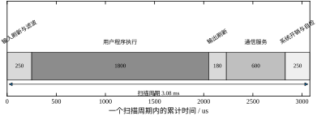
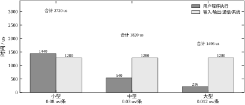
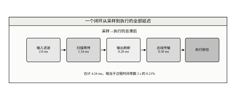
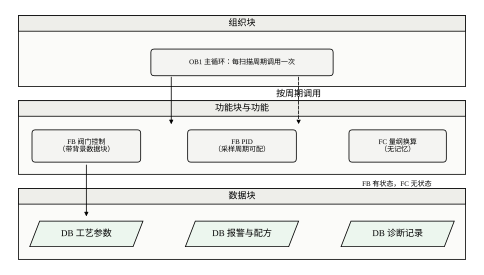
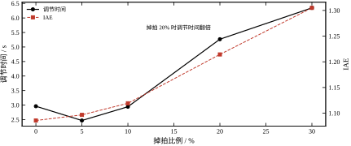
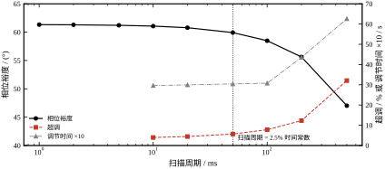
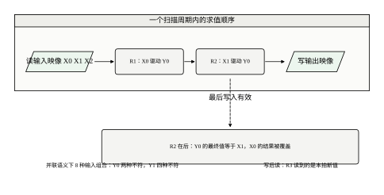
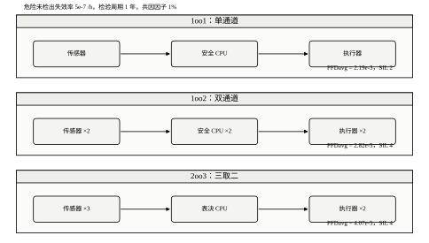
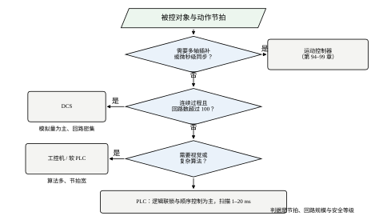

第一个现象是“程序没错，动作却偶尔不对”。某条包装线的气缸联锁，台架上按顺序点动一切正常，到了现场连续运行时，操作工按下急停复位后气缸偶尔不伸出。程序被翻了三遍，逻辑门没有写错，问题出在两个梯级同时驱动同一个输出线圈：扫描按从上到下的顺序执行，后一个梯级把前一个的结果覆盖了。用 8 种输入组合逐一核对，两个输出的实际值与“并联”语义分别有 2 种和 4 种不符（图 88-6）。
第二个现象是“加了一段通信，控制就变差了”。原来的程序扫描周期 10 ms，PID 回路稳定；为了上传数据增加了通信服务块，扫描涨到 20 ms，操作员反映温度“压不住”。参数一个没动，闭环却变了，原因是积分项按标称周期累加，而实际经过的时间变长了。掉拍 20% 时，等效积分时间从 2.00 s 拉长到 2.50 s，调节时间从 2.96 s 涨到 5.27 s（表 88-5）。
第三个现象是“冗余做了，安全等级没升”。把单通道换成双通道，传感器、CPU、执行器都配了两套，评估时却发现 PFDavg 只从 2.19\times10^{-3} 降到 1.22\times10^{-3}，仍停在 SIL 2。共因失效吃掉了大部分收益：两套通道走同一根电缆槽、用同一个电源、由同一版固件驱动，失效并不独立。
三个现象对应三件事：扫描顺序决定逻辑，扫描周期决定动态，安全架构决定等级。它们都不属于控制算法的范畴，却在现场反复出现。
第 86 章讨论实时软件的任务划分与调度，回答“多个周期任务怎么共享一个 CPU”；第 87 章讨论嵌入式控制器，回答“一颗 MCU 在一拍内怎么把 FOC 算完”。本章讨论第三种形态：PLC。它的计算量远小于伺服驱动器，但有一套自己的规矩——循环扫描、映像区、五种标准语言、面向维护人员的在线修改。
三章的差别不在硬件强弱，而在确定性来自哪里。第 86 章的确定性靠调度分析，第 87 章靠中断优先级与指令计数，PLC 则靠“一次只做一件事”：输入采样、程序执行、输出刷新依次进行，任何时刻只有一个梯级在求值。这种串行换来了可预测，也换来了扫描周期这条硬边界。
本章不重复 PID 的整定方法（见第 44、106 章），也不展开 MPC（见第 58、80 章）与 Smith 预估（见第 47、107 章）。采样定理与保持器在第 4、85 章已经讲过，这里只引用结论。
表 88-1 把一次扫描拆成五块。用户程序占 58.4%，是唯一随项目规模增长的块；通信服务占 19.5%，常被低估；输入刷新与滤波、输出刷新、系统自检三块合计 22.0%，基本是常数。
| 阶段 | 时间 / us | 占比 / % | 是否随项目增长 |
|---|---|---|---|
| 输入刷新与滤波 | 250 | 8.1 | 否 |
| 用户程序执行 | 1800 | 58.4 | 是 |
| 输出刷新 | 180 | 5.8 | 否 |
| 通信服务 | 600 | 19.5 | 部分 |
| 系统开销与自检 | 250 | 8.1 | 否 |
| 合计 | 3080 | 100.0 | — |
表 88-1 典型中型 PLC 的扫描周期预算（18 000 条布尔指令）
图 88-1 把五块画成一条累计时间轴。输入刷新在最前、输出刷新在中间，这个顺序就是“采样—计算—输出”的物理含义：本拍读到的输入是本拍开始时的值，本拍算出的输出要到本拍结束才生效。两者之间隔着整个程序执行时间，这段间隔就是扫描引入的纯滞后。

换成不同等级的 CPU，程序执行块会成比例缩短，固定块不变。表 88-2 给出同一份 18 000 条指令的程序在三档 CPU 上的结果：小型 CPU 2.72 ms，中型 1.82 ms，大型 1.50 ms。程序执行从 1440 us 降到 216 us，扫描周期却只从 2.72 ms 降到 1.50 ms，因为固定开销 1.28 ms 不随 CPU 变快。
表 88-2 同一程序规模下三档 CPU 的扫描周期
| CPU 等级 | 单条指令 / us | 程序执行 / us | 扫描周期 / us |
|---|---|---|---|
| 小型 | 0.08 | 1440 | 2720 |
| 中型 | 0.03 | 540 | 1820 |
| 大型 | 0.012 | 216 | 1496 |
这张表解释了一个常见误判：换更快的 CPU 并不按比例缩短扫描周期。当固定开销占到一半以上时，CPU 再快也只能把总时间压到 1.28 ms 附近。要真正提速，得先砍通信服务与自检，而不是换芯片。

第一个问题：扫描顺序如何决定输出。梯形图是从左到右、从上到下求值的，线圈写入映像区后立刻可被后面的梯级读到。同一个线圈出现两次会发生什么，同一梯级里既有常开又有常闭时按什么次序求值，这些都要在写程序之前想清楚，而不是在现场调试时试出来。
第二个问题：扫描周期与过程时间常数怎么配。扫描太慢，采样滞后吃掉相位裕度；扫描太快，程序没写完就被看门狗复位。本章用一阶加纯滞后的过程给出定量边界：扫描周期到时间常数的 2.5%（50 ms）时，相位裕度只掉 1.4°，超调从 4.0% 涨到 5.7%；到 5%（100 ms）时，相位裕度掉 2.8°，超调涨到 7.8%。
第三个问题：掉拍与抖动怎么算。PLC 的扫描不是硬实时，通信服务、大块数据拷贝、在线修改都可能让某一拍变长。若积分项按标称周期累加，掉拍会让等效积分时间变长，控制器变“软”。本章给出等效积分时间的估算式与实测曲线。
第四个问题：程序怎么模块化。功能块（FB）、功能（FC）、数据块（DB）、组织块（OB）的分工，决定了程序能不能被复用、能不能在线修改、能不能通过安全认证。图 88-7 给出一个最小可用的分层结构。
第五个问题：安全等级怎么算。SIL 不是“双通道”三个字，而是 PFDavg 的数量级。本章给出 1oo1、1oo2、2oo3 三种架构的算式与一张对照表，并说明共因因子为什么常常是决定性的一项。
本章的主线数字有五组。扫描周期 3.08 ms，其中程序 58.4%、通信 19.5%；换 CPU 只能把周期压到 1.50 ms 附近，因为固定开销 1.28 ms 不动。
从采样到执行的总滞后 4.24 ms，由输入滤波 2.0 ms、扫描等待 1.54 ms、输出 0.20 ms、总线 0.50 ms 组成，相当于 2 s 时间常数的 0.21%，这一档几乎不损失裕度。
扫描周期从 10 ms 增到 500 ms，相位裕度从 61.1° 降到 47.0°，超调从 4.0% 涨到 32.1%。这条曲线的拐点在 50 ms 附近，即时间常数的 2.5%。
掉拍 20% 时调节时间从 2.96 s 涨到 5.27 s，IAE 从 1.086 涨到 1.214；掉拍 30% 时两者继续恶化到 6.35 s 与 1.305。掉拍对超调的影响方向相反——积分变弱，超调反而下降，只看超调会得出错误结论。
安全回路的 PFDavg 在单通道、检验周期 1 年时是 2.19\times10^{-3}（SIL 2）；双通道、共因因子 1% 时降到 2.82\times10^{-5}（SIL 4）；同样双通道，共因因子 10%、检验周期 5 年时升回 1.22\times10^{-3}（SIL 2）。冗余能否换来等级，取决于共因与检验周期，不取决于通道数量。
本章按“原理—设计—分析—参数—调参—改进—落地”排列，不同角色可以走不同路径。
做设计的人重点看 §88.3 与 §88.7：前者给五步流程与程序骨架，后者给七个参数的取值与耦合关系。两节读通，项目的主要决策就定了。
做调试的人重点看 §88.5 与 §88.8：前者解释扫描怎么影响响应，后者给五步整定与症状表。现场时间紧，可以先翻表 88-11。
做评估的人重点看 §88.2、§88.6 与 §88.11：三节给的都是判据与边界，用来回答“这个方案行不行”，不涉及具体接线。
做维护的人重点看 §88.9 与 §88.10：前者讲怎么在不增加风险的前提下改程序，后者讲验收记录与文档移交。
四条路径共享同一组数字，所以无论从哪节进入，都能对回 §88.1.5 的五组主线数据。
本章反复用到五个词，含义不同，混用会导致算错。
扫描周期是“读输入到下一次读输入”的时间，本章 3.08 ms。它由程序规模决定，随项目变化。
控制周期是 PID 实际被执行的间隔。若 PID 放在主循环里，它等于扫描周期；若放在周期中断里，它是中断周期，与扫描无关。
采样周期是测量值被更新的间隔。它与控制周期可能相同，也可能更慢（远程 I/O 分帧时）。
响应时间是从扰动发生到输出开始动作的时间，等于式 (88-2) 的 T_d，本章 4.24 ms。它永远大于半个扫描周期。
抖动是扫描周期的波动幅度，本章最大 4.88 ms 对平均 3.08 ms。它不影响平均值，只影响最坏情况。
五个词里最容易混的是扫描周期与控制周期。把它们当成同一个量，会在“PID 放中断里”的场合把扫描时间重复算一遍，得出偏保守的结论。
扫描周期可以写成程序规模的仿射函数：
T_{\rm scan}=c_0+c_1N \tag{88-1}
其中 N 是布尔指令条数，c_1 是单条指令的执行时间，c_0 是与程序无关的固定开销。按表 88-1 的数，中型 CPU 的 c_0=1280 us、c_1=0.03 us/条，N=18000 时 T_{\rm scan}=3080 us。
这个模型的关键在 c_0 不为零。很多人把扫描周期当成“程序多长、周期多长”，于是认为优化程序能等比例缩短周期。实际上 c_0 占了 41.6%，程序砍一半只能把周期从 3.08 ms 降到 2.18 ms，降幅 29%。要把周期压到 1.5 ms 以下，必须动通信服务这块固定开销。
c_1 还与指令类型有关。布尔指令、整数运算、浮点运算、字符串处理的耗时依次上升，浮点乘法可能是布尔指令的 10 到 30 倍。式 (88-1) 只在同一类指令占比稳定的前提下成立，程序结构大改后要重新测 c_1。
PLC 的输入映像在扫描开始时刷新，输出映像在扫描结束时生效。对一次采样而言，从物理量被读到、到对应的输出真正改变，平均要等半个扫描周期。再加上输入滤波、输出刷新与总线传输，总滞后为
T_d=\frac{T_{\rm filt}}{2}+\frac{T_{\rm scan}}{2}+T_{\rm out}+T_{\rm bus} \tag{88-2}
代入本章的数：输入滤波 4 ms 取半 2.0 ms，扫描 3.08 ms 取半 1.54 ms，输出 0.20 ms，总线 0.50 ms，合计 4.24 ms。
表 88-3 从采样到执行的延迟分解
| 环节 | 均值 / ms | 最坏 / ms | 说明 |
|---|---|---|---|
| 输入滤波 | 2.00 | 2.00 | 4 ms 滑动窗，取半 |
| 扫描等待 | 1.54 | 3.08 | 与采样时刻相对扫描起点的相位有关 |
| 输出刷新 | 0.20 | 0.60 | 继电器与驱动级差异大 |
| 现场总线 | 0.50 | 1.00 | 1 ms 周期，取半 |
| 合计 | 4.24 | 6.68 | — |

滞后对闭环的影响是相位损失。在穿越频率 \omega_c 处，
\Delta\varphi=\omega_cT_d \tag{88-3}
本章的 \omega_c=1.0 rad/s、T_d=4.24 ms，代入得 0.24°，几乎可以忽略。这也是为什么慢过程用 PLC 完全够用：滞后只有时间常数的 0.21%，相位上根本看不出来。
同样的 4.24 ms 放到伺服轴上就是灾难。第 87 章的电流环穿越频率在 800 Hz 量级，\omega_cT_d=2\pi\times800\times0.00424=21.3 rad，折合 1220°，环路早就振不起来。PLC 与运动控制器的分界，本质上就是 T_d 与 \omega_c 的乘积能不能压到 0.3 以内。
梯形图看似图形，求值却是一条严格的顺序规则：从左到右、从上到下，每个梯级算出一个布尔值，赋给线圈对应的映像位。写成式子，第 i 个梯级对线圈 c 的赋值是
c\leftarrow g_i\bigl(X^{(k)},\,M^{(k)}\bigr) \tag{88-4}
其中 X^{(k)} 是本拍输入映像，M^{(k)} 是当前映像区（含本拍已被前面梯级改写的位）。
式 (88-4) 有两条容易踩的推论。第一条：同一线圈被 m 个梯级驱动时，最终值只由最后一个梯级决定，前 m-1 个的结果被覆盖。第二条：梯级内部引用的是“当前”映像，若某个线圈在本拍已被改写，后面的梯级读到的是新值，而不是上一拍的值。
这两条合起来，使梯形图不等价于布尔代数。布尔代数里 Y=X_0\lor X_1 与书写顺序无关；梯形图里把它写成两个梯级驱动同一个 Y，结果就变成 Y=X_1。要表达“或”，正确写法是把两个触点并联在同一个梯级里，而不是分成两个梯级。
PLC 的 PID 通常写成位置式，积分项按标称采样周期累加：
u(k)=K_c\left[e(k)+\frac{T}{T_i}\sum_{j=0}^{k}e(j)\right] \tag{88-5}
这里的 T 是组态里填的周期，不是实测的间隔。当某一拍因通信或在线修改被拉长到 2T，积分仍然只加 e\cdot T，实际经过的时间却是 2T。
设掉拍比例为 p，即平均每 1/(1-p) 拍中有 p/(1-p) 拍被拉长为两倍，则每单位真实时间累计的积分量只有应有值的 1/(1+p)。等效积分时间为
T_{i,\rm eff}=T_i(1+p) \tag{88-6}
p=0.2 时 T_{i,\rm eff}=2.4 s，比整定值长 20%。积分变弱，闭环变慢，超调下降，但恢复时间拉长——这一点在表 88-5 里能看到：超调从 4.0% 降到 0，调节时间从 2.96 s 涨到 5.27 s。
零均值的抖动不改变平均积分速率，只引入积分噪声。工程上真正有害的是“系统性掉拍”：通信块周期性占用较长时间，使扫描周期呈双峰分布。双峰的均值可能只涨 10%，但每一拍都在按标称值积分，误差会累积。
安全功能的可靠性用平均失效概率衡量。单通道结构在检验周期 T_1 内的平均危险失效概率为
\mathrm{PFD}_{1oo1}=\frac{\lambda_{DU}T_1}{2} \tag{88-7}
其中 \lambda_{DU} 是危险未检出失效率，单位 1/h。这个式子的含义很直白：失效率与检验周期的乘积是“一个周期内失效的概率”，取半是因为失效在周期内均匀发生，平均暴露时间是半个周期。
双通道结构并不简单地把概率平方。两套通道可能因共因失效同时失效，用共因因子 \beta 描述这部分相关性：
\mathrm{PFD}_{1oo2}=\frac{\beta\lambda_{DU}T_1}{2}+\frac{(1-\beta)^2\lambda_{DU}^2T_1^2}{3} \tag{88-8}
第一项是共因项，与单通道同阶，只乘了 \beta；第二项是独立失效项，是 \lambda_{DU}T_1 的平方量级。当 \beta=1\% 时第一项比第二项大一个数量级以上，也就是说双通道的可靠性主要由共因决定，而不是由“两套”决定。
三取二结构（2oo3）的独立项系数不同：
\mathrm{PFD}_{2oo3}=\frac{\beta\lambda_{DU}T_1}{2}+(1-\beta)^2\lambda_{DU}^2T_1^2 \tag{88-9}
2oo3 的独立项是 1oo2 的三倍，但它在单通道故障时仍能执行安全功能，可用性更好。选 1oo2 还是 2oo3，取决于“误跳车”与“拒动作”哪个代价更高。
表 88-4 安全完整性等级与 PFDavg 的对应关系
| SIL | PFDavg 区间 | 典型场合 |
|---|---|---|
| 4 | 10^{-5}–10^{-4} | 化工高危、核电 |
| 3 | 10^{-4}–10^{-3} | 过程工业紧急停车 |
| 2 | 10^{-3}–10^{-2} | 一般机械安全、燃烧器 |
| 1 | 10^{-2}–10^{-1} | 简单联锁、警示 |
选级不是越高越好：SIL 3 以上的冗余、诊断覆盖率与验证工作量都会陡增，多数过程装置按风险分析定到 SIL 2 就能覆盖。
看门狗是一个独立计数器，程序每拍喂一次，计数溢出就复位 CPU。它的定时必须满足两条：
T_{\rm scan,max}<T_{\rm wd}<T_{\rm safe} \tag{88-10}
左侧是“正常最坏扫描不能触发复位”，右侧是“真死机时必须在工艺变危险之前复位”。本章的 T_{\rm scan,max}=4.2 ms（含 25% 余量），T_{\rm wd}=10 ms，工艺允许的最大失控时间约 100 ms，两条都满足。
工程上常把 T_{\rm wd} 取成最大扫描的 1.5 到 2 倍。取太小，程序升级后一运行就复位；取太大，真死机时要等很久才动作。这个倍数的选择没有理论最优，取决于工艺对失控时间的容忍度。
扫描周期只是采样链的一环。完整的链条是：传感器响应、输入滤波、模数转换与采样、程序计算。四段各有各的时间常数，串起来才是式 (88-2) 里的 T_d。
本章的数：传感器 10 ms 到 63%、输入滤波时间常数 4 ms（半拍折 2 ms）、扫描 3.08 ms（折 1.54 ms）、输出 0.20 ms、总线 0.50 ms。四段相加 4.24 ms，其中扫描只占 36%。
采样率是 1/3.08\ {\rm ms}=325 Hz，过程穿越频率 0.159 Hz，比值 2042。这个比值远高于控制所需的 20 到 40 倍，所以对本章的回路，采样定理不构成约束。
混叠的风险不在控制带宽，而在噪声。40 Hz 以上的噪声被输入滤波衰减，残余部分折叠到低频，进入微分项后被放大。这是“扫描很快但输出仍抖动”的常见原因，问题不在采样率，在抗混叠滤波不够。
量化误差是另一条。12 位模数转换在 0 到 100% 量程上的分辨率是 0.024%，16 位是 0.0015%。单次调节看不出差别，做流量积算或能量累计时，0.024% 的系统偏差一年会累成可观的数。
本地 I/O 的刷新已经算在输入输出块里。远程站不一样：每个站的数据要经过现场总线，一帧的往返约 0.5 ms，站数增加，这段延迟按站数叠加。
n_s 个站全部轮询一遍的时间是 n_s\times0.5 ms。三站是 1.5 ms，总滞后从 4.24 ms 涨到 5.24 ms；八站是 4.0 ms，总滞后 7.74 ms。相对 2 s 的时间常数，这仍然是 0.39%，控制品质看不出变化。
对联锁就不一样了。一条跨站的联锁，信号要经过“远端采样—总线—本机程序—总线—远端输出”，最坏情况是两倍总线延迟加一次扫描。八站时这条链是 4.0+3.08+4.0=11.1 ms，相对 100 ms 的要求还有余量，但已经不能再加站。
分站的原则是按物理位置，不是按信号类型。按位置分站，一帧数据对应一个区域，联锁大多在区域内部完成；按类型分站，一个温度信号和一个阀门输出可能隔着三个站，联锁链被拉长。
扫描周期不是常数，是一个随机变量。把它当常数用，设计就会偏乐观。
该看的统计量有四个：平均、95 分位、最大、超时次数。平均描述常态，95 分位描述偶发，最大决定看门狗，超时次数决定可用性。
本章的数：平均 3.08 ms，95 分位 3.4 ms，最大 4.2 ms。最大值比平均高 36%，这段差距来自通信服务与诊断写入，不是程序本身。
统计窗口至少覆盖一个完整工艺周期。只看十分钟，可能一次都没赶上“上位机全量刷新”；看二十四小时，才能把交接班、配方切换、报表生成这些周期性事件都包进来。
设计点取 95 分位的 1.2 倍，即 3.4\times1.2=4.08 ms，向上取整为 4.2 ms，正好对上 §88.2.6 的 T_{\rm scan,max}。直接用平均算看门狗，遇到一次通信高峰就会复位。
式 (88-1) 的两个系数 c_0、c_1 不能照抄样本值，要在现场标定。方法很简单：用两个规模不同的程序各测一次扫描。
造一个 10 000 条指令的空循环程序，测扫描 2.28 ms；再加 10 000 条，测 3.28 ms。两次相减得 c_1=0.1 µs/条，回代得 c_0=1.28 ms，与表 88-1 的固定开销一致。
标定一次约需半小时，价值在后面每一次改程序。有了这两个系数，新加 3000 条指令的代价可以直接算：3000\times0.1=300 µs，扫描从 3.08 ms 变成 3.38 ms，占看门狗 33.8%。
标定时要注意指令类型。布尔指令 0.1 µs，浮点运算可能到 1 µs，字符串处理更贵。用布尔指令标出来的 c_1 只对布尔逻辑有效，混入浮点后实际扫描会比估算高。
两个点标定出的直线只在中等规模成立。程序小到几千条时，c_0 里的通信与自检占比更高，直线斜率会偏大；大到几十万条时，缓存失效会让 c_1 上升。标定点要选在项目实际规模附近。
节拍由三条约束共同决定，取其中最严的一条。
第一条来自过程动态。扫描周期是纯滞后，滞后占时间常数的比例越小，对裕度的影响越小。本章的数据是：2.5%（50 ms）损失 1.4°，5%（100 ms）损失 2.8°，10%（200 ms）损失 5.7°。工程上取 T_{\rm scan}\le\tau/20 作为起点，要求高的回路取 \tau/50。
第二条来自联锁响应。急停、超压、超温这类联锁，从信号变化到执行器动作的总时间由式 (88-2) 给出，本章是 4.24 ms，相对 100 ms 的工艺要求有三个数量级余量。这一条通常不是瓶颈，除非输入滤波设得很长。
第三条来自程序规模。按 I/O 点数与回路数估出指令条数 N，代入式 (88-1) 得到周期。若算出来超过第一条给的上限，只有两条路：拆程序到多个 CPU，或者砍功能。
映像区是扫描语义的物理基础。输入映像在扫描开始时整体刷新，程序读的是映像而不是模块；输出映像在扫描结束时整体下发。这个设计让程序在整拍内看到“冻结”的输入，避免了同一拍内前后读到不同值。
模拟量通道要单独设滤波。4–20 mA 输入常配 4 ms 滑动平均，对应 250 Hz 带宽，对温度、压力足够；对流量这种快变量要降到 1 ms 以内。滤波时间直接进入式 (88-2) 的第一项，设长了会吃掉裕度。
高速信号不能走扫描。编码器计数、脉冲输出、PWM 这类信号由独立硬件处理，CPU 只读结果。把它们放进扫描循环，等于让 3 ms 的周期去处理微秒级的事件，必然丢脉冲。
分布式 I/O 的总线周期与扫描周期解耦。总线按自己的节拍刷新远程站，PLC 在扫描开始时从总线缓冲区取数。这意味着远程 I/O 的实际滞后还叠加了总线周期的一半，本章取 0.5 ms。
IEC 61131-3 定义了四类程序组织单元，各有用处。组织块（OB）是入口，主循环 OB1 每拍调用一次，周期中断 OB3 按固定间隔调用，诊断 OB82 在模块故障时调用。功能块（FB）带背景数据块，有记忆；功能（FC）无记忆，只做运算；数据块（DB）存工艺参数与状态。
图 88-7 给出一个最小可用的三层结构。顶层是 OB1，中层是三个 FB/FC，底层是三个 DB。阀门控制做成 FB，因为它要记住开度、超时、故障计数；PID 做成 FB，因为它要记住积分项与上次误差；量纲换算做成 FC，因为它只是乘一个系数。

PID 必须放在周期中断里，不能放在主循环。主循环的周期随程序分支变化，而 PID 的积分与微分都假定采样间隔恒定。放在主循环里，式 (88-6) 的失真会随工况漂移，整定值失去意义。
一个 FB 用单实例还是多实例，取决于调用次数。同一台设备的多台副本用多实例，共享一个背景 DB 数组；不同设备用单实例，各自有独立 DB。多实例省内存，但调试时变量路径更深，现场维护人员不容易找到。
安全功能与标准控制必须在逻辑上分开，最好是物理上分开。安全 PLC 执行急停、安全门、光幕、超压保护；标准 PLC 执行启停、调节、报警。两者之间只允许单向传递：安全状态可以送给标准程序做显示，标准程序不能影响安全逻辑。
同一颗 CPU 上做安全与标准任务时，安全任务有独立的内核校验、独立的内存区、独立的时钟。标准任务崩溃不能影响安全任务的执行，这靠内存保护单元与独立看门狗实现。这种结构省硬件，但认证时要提供分区隔离的证据。
安全程序要短。一个安全功能块通常只有几十条指令，因为它必须能被完整验证。把工艺联锁写进安全程序是常见错误：工艺会变，安全程序不该跟着变。
设计完成后要做四项验证。
扫描余量：最坏扫描不超过看门狗的 50%，正常扫描不超过 30%。本章的 3.08 ms 对 10 ms 看门狗是 30.8%，刚好在线上；程序再长 25%，就升到 35.3%，需要重新评估。
故障注入：拔掉通信线、断开远程站、强制输入点、模拟模块故障，逐项确认系统进入预定状态。这一项最能暴露“只在正常路径上正确”的程序。
在线修改验证：下载前后各跑一次完整工艺循环，对比关键变量曲线。在线修改会改变扫描周期，进而改变 PID 的等效积分时间，这一点常被忽略。
文档一致性：I/O 表、变量表、联锁表三份文档必须与程序一致。现场排故时，工程师看的是文档，不是代码。
I/O 分配表是程序的底稿，也是日后排故的地图。分配时守三条：按工艺单元分段、按信号类型成组、留出余量。
按工艺单元分段，是把同一台设备的输入输出排在一起。反应釜的温度、搅拌、进料阀占连续的地址段，改这台设备时不用翻整张表。按类型分段（所有模拟量在一起）只在点数很少时方便，点数一多就找不到对应关系。
按信号类型成组，是因为模拟量模块的通道数固定（4 路、8 路），混排会浪费通道。一个 8 路模块只接了 3 路温度，剩下 5 路不能给开关量用。
余量按 15% 到 20% 留。一个 300 点的项目留 45 到 60 点。留少了，加一个检测工位就要扩模块；留多了，柜子变大、成本上升。经验值是每个机架留 2 到 4 个空槽。
安全点必须单独成组，接在安全模块上，不能与标准点混在同一模块。混装的后果是认证时整个模块都要按安全等级重新评估，成本远高于单独买一块安全模块。
点号命名要有规则：单元号加设备号加信号类型加序号。规则写在图纸首页，所有人按同一套规则命名。没有规则的项目，半年后连“这个 I0.7 是什么”都查不出来。
程序骨架决定后面每一段代码往哪里放。图 88-7 给的三层结构落到代码上，是下面这个调用顺序。
启动组织块只做初始化：清零累计量、装载配方、把输出置安全位、建立通信连接。它只执行一次，不写业务逻辑。
主循环按“读—判—算—写”四段排：刷新输入映像、执行报警与联锁、执行回路、刷新输出映像。联锁必须排在回路之前，否则本拍算出的输出可能绕过联锁直接下发。
报警与联锁写成一个功能，每个联锁一屏，输入是条件、输出是动作与延时。回路写成功能块，每个回路一个实例数据块，参数（量程、增益、积分时间、输出限幅）放在实例里，不放在全局。
手自动切换放在回路功能块内部，不放在主循环。切换时要无扰：手动转自动时，把当前手动输出预置进积分器，避免输出跳变。这一条不写，切换时阀门会猛动一下。
最后一段是输出刷新与诊断。诊断信息写进诊断数据块，由通信块上传，不直接驱动输出。把诊断和联锁混在一起，是“报警一多就停机”的根源。
安全功能写完不算完，要证明它在失效时真的动作。验证有三项：注入、计时、旁路。
注入是把信号强行置成故障态：断开传感器线、短接输出、强制某个位。每注入一次，看系统是否进入预定状态，以及进入的时间。注入要逐点做，不能抽样。
计时用示波器测整条链：传感器动作的时刻接一个通道，阀门到位的反馈接另一个通道，两个时刻之差就是实际响应时间。本章的链是 106 ms，若实测超过 120 ms，就要查是哪一段变慢。
旁路是验证旁路开关本身有效，以及旁路状态能被监视。旁路装好不复位是最大的隐患，验证时要专门测“旁路超时是否报警”。
三项验证的频率不同。注入与计时在 FAT 与 SAT 各做一次，之后每年做一次全功能；旁路试验每次检修后都做，因为它与本次作业直接相关。
离线测试不需要复刻整条产线，一组最小配置就能覆盖八成的逻辑错误：24 V 电源、八路开关、八只指示灯、两路 4 到 20 mA 信号源、一台装编程软件的电脑。
开关模拟传感器，指示灯模拟执行器，信号源模拟模拟量。把程序下载进去，按联锁表逐条触发，看指示灯是否按预期变化。这套配置的成本不到两千元，能在办公室里发现大部分错误。
测试台覆盖不了三件事。第一是时序：真实气缸的动作要 0.5 s，台架上的指示灯是瞬时的，程序里依赖“到位信号”的逻辑测不出来。第二是干扰：台架没有变频器、没有长电缆。第三是惯性：阀门的实际行程与台架上的信号源无关。
所以台架测试通过不等于现场通过。它的价值是把“逻辑错误”和“现场问题”分开，让现场调试只处理后者。
台架测试要留记录：每个联锁的触发条件、预期动作、实际动作、测试人。记录不写，等于没测。
先把 PLC 拿掉，看连续控制器能做到什么。本章的过程是一阶加纯滞后：时间常数 2 s、纯滞后 0.5 s、单位增益。用内模控制整定 PI，取闭环时间常数 \lambda=0.5 s，得到 K_c=2.0、T_i=2.0 s。
这组参数下，闭环近似为“纯滞后 + 一阶惯性”：滞后 0.5 s 不变，惯性时间常数变成 \lambda=0.5 s。阶跃响应没有超调，2% 调节时间约 2.5 s。这是连续域的理论基准，也是后面判断离散实现好坏的那把尺子。
基准不是“最优”。把 \lambda 取到 0.2 s，响应更快，但增益涨到 3.33，对滞后变化的敏感度上升；取到 1.0 s，鲁棒性更好，但慢一倍。\lambda 的选择是快速性与鲁棒性的折中，跟采样无关。
第 88.2 节算出的 4.24 ms 只是 PLC 引入的部分。真实回路的滞后还包括传感器与执行器：
热电偶加保护套管的时间常数常在 5 到 20 s，比 PLC 的扫描周期大三个数量级；气动调节阀的全行程时间 0.5 到 2 s；变频器加电机的电气时间常数几十毫秒。这些环节串起来，PLC 那 4 ms 连零头都算不上。
这个事实决定了一件事：慢过程的控制品质主要取决于传感器与执行器，而不是 PLC 的扫描周期。现场常见“换个更快的 PLC 就好了”的判断，多数情况下是错的。真正该换的是响应慢的测温元件或卡涩的阀门。
反过来，当过程本身很快时，PLC 的 4 ms 就成了主要滞后。流量回路的时间常数可能只有 0.1 s，此时 4 ms 占 4%，相位上已经开始有影响；压力回路更快的场合，PLC 就顶不住了。
连续设计的鲁棒性可以用相位裕度衡量。本章的基准回路在 \omega_c=1.0 rad/s 处有 61.3° 裕度，扣掉纯滞后 0.5 s 贡献的 28.6°，其余来自惯性环节。
若纯滞后增大 50%，即从 0.5 s 变成 0.75 s，相位损失增加 \omega_c\Delta L=0.25 rad，合 14.3°，裕度降到 47.0°。这个数与表 88-6 里扫描周期 500 ms 那一行完全一致——因为那一行的等效延迟也多了 0.25 s。滞后就是滞后，来源不重要。
若过程增益增大 30%，穿越频率随之升高，裕度会进一步下降。用本章的参数估算，增益 1.3 时穿越频率升到 1.3 rad/s，三项滞后合计约 128°，裕度降到 52.4°。这仍在可接受范围，但已经接近工程下限。
若增益增大 30% 与滞后增大 50% 同时发生，裕度降到 33.8°，低于 45° 的常用下限，回路会出现明显振荡。这一格就是整定时要留的余量：两项单独都还能站住，叠加起来就站不住。
用连续工具设计 PLC 回路，需要两个条件同时成立。
第一，扫描周期远小于过程时间常数。本章的 3.08 ms 对 2 s 是 0.15%，属于“远小于”；若扫描到 100 ms，占比 5%，连续近似开始有可见误差（超调从 4.0% 涨到 7.8%）。
第二，扫描周期远小于闭环带宽的倒数。\omega_cT_{\rm scan}\ll1 时，ZOH 的半拍滞后可以忽略；本章 \omega_cT_{\rm scan}=0.003，当然满足。若 \omega_c 到 100 rad/s、扫描 10 ms，乘积到 1.0，连续设计就完全失效了。
两个条件都满足时，可以放心用连续域的工具整定，再把参数搬进 PLC，最后用离散仿真校验一遍。校验的目的不是重新整定，而是确认离散化没有把裕度吃掉。
条件不满足时，只能直接在离散域设计。第 88.5 节给出离散域的响应数据，第 88.6 节给出稳定边界。
把本章的离散仿真结果与连续基准对照，可以看到差距的分布。
扫描 10 ms 时，超调 4.0%，调节时间 2.96 s；连续基准的超调接近 0，调节时间约 2.5 s。差距主要来自采样滞后与积分项的离散化，量级是 0.5 s，占基准的 20%。
扫描 50 ms 时，超调 5.7%，调节时间 3.04 s。超调继续上升，调节时间却几乎不动，因为超调与调节时间对滞后的敏感度不同：超调看的是相位裕度，调节时间看的是积分强度。
扫描 500 ms 时，超调 32.1%，调节时间 6.26 s，两项都显著恶化。此时扫描周期已占时间常数的 25%，连续近似彻底失效，整定参数必须重来。
这组对照说明：连续设计给出的参数有“有效期”。有效期由扫描周期与时间常数的比值决定，比值小于 1% 时几乎无损，到 5% 时开始可见，到 25% 时失效。
连续设计给出的 K_c=2.0、T_i=2.0 s 是理想值。真实 PLC 实现里，有四项被连续模型忽略了，每一项的误差量级不同，值不值得管也不同。
第一项是量化。12 位模数转换的 1 个最低位是量程的 0.024%，经比例增益 2 放大后变成 0.048% 的输出台阶。若阀门分辨率是 0.1%，这个台阶已经低于阀门能分辨的最小动作，不产生极限环。
第二项是采样抖动。实际扫描不会每拍都恰好 3.08 ms，最大可到 4.2 ms。抖动对相位的影响是 \omega_c\Delta T/2，取 \Delta T=1 ms、\omega_c=1 rad/s，得到 0.029°，可以忽略。
第三项是执行器死区。阀门死区 0.5% 时，稳态误差带是死区除以开环增益，即 0.25%。这一项与扫描无关，但常被误归因于“扫描太慢导致压不住”。
第四项是计算延迟的具体分布。本章把整个扫描折成半拍，实际是“输入刷新在前、程序在中间、输出刷新在末尾”，等效延迟在 0 到 1 拍之间均匀分布，平均半拍。这个近似在扫描远小于时间常数时成立，误差在 0.1 拍以内。
四项加起来，本章的总误差不到 0.3° 相位，相对于 61° 的裕度是 0.5%。这就是“连续设计对本章够用”的定量依据，而不是一句“扫描够快就行”。
连续设计不是永远够用。判据有两条，满足任意一条就该改用离散方法。
第一条是 T_{\rm scan}/\tau>0.05。本章是 0.0015，离得很远；扫描到 100 ms 时是 0.05，正好在边界；到 500 ms 时是 0.25，连续模型失效，表 88-6 里 32.1% 的超调就是这么来的。
第二条是 \omega_cT_{\rm scan}>0.1。本章是 0.0031，同样很远；一个穿越频率 50 rad/s、扫描 3 ms 的回路是 0.15，已经越线，连续整定的参数直接用会振荡。
反过来看，若 T_{\rm scan} 已经接近过程的纯滞后，例如纯滞后 50 ms 而扫描 20 ms，即便比值 \omega_cT_{\rm scan} 不大，也该做离散设计。原因是扫描滞后与纯滞后叠加后，总滞后翻倍，连续域里那个“半拍”的近似误差被放大。
离散设计的常用方法有三种：直接按 Z 域极点配置、Dahlin 算法、以及把连续控制器做 Tustin 变换后再补偿滞后。三种方法在第 85 章都有推导，本章只给结论：扫描周期进入时间常数的 5% 以后，按连续方法整定的参数必须重新验证，不能照搬。
工程上更常见的做法不是换设计方法，而是换节拍。把回路挪进 10 ms 的周期中断，T_{\rm scan}/\tau 立刻从 0.25 降到 0.005，连续设计又够用了。这比重新推导离散控制器便宜得多。
本章的 K_c=2.0、T_i=2.0 s 不是试出来的，来自内模控制对一阶加纯滞后的整定式：
K_c=\frac{\tau}{K(\lambda+L)},\qquad T_i=\tau \tag{88-11}
取 \tau=2 s、K=1、L=0.5 s、\lambda=0.5 s，得 K_c=2/(0.5+0.5)=2.0，T_i=2.0 s，与仿真的初值一致。
\lambda 是闭环时间常数，取值决定快慢与鲁棒。\lambda 取 0.25 s 时 K_c=2.67，响应快但裕度降到 45° 左右；取 1.0 s 时 K_c=1.33，很稳但慢一倍。
工程上把 \lambda 取在 0.5L 到 2L 之间。模型准、执行器快，取小值；模型粗糙、有未建模动态，取大值。本章取 L 本身，是折中。
这条整定式的前提是模型已知且线性。若 L 估小了 30%，实际裕度会比计算值低 10° 以上。所以 §88.7.10 的辨识精度，直接决定整定的可信度。
从控制的角度看，PLC 的输出在两次刷新之间保持不变，这正是零阶保持器。第 4 章讲过，零阶保持引入的平均滞后是半个采样周期；第 85 章把这个结论落到数字控制系统的采样周期选择上。PLC 的特殊之处在于，“采样周期”不是一个可以随便设的参数，而是由程序规模决定的扫描周期。
这带来一个后果：控制器参数与程序规模耦合。同一个 PID 回路，程序加长后扫描变慢，等效积分时间与微分增益都随之变化。伺服驱动器不会出现这个问题，因为它的采样周期由定时器固定，与代码长度无关。
工程上的对策是把 PID 放进固定周期的中断里，让采样周期与扫描周期解耦。主循环再长，中断仍然按 1 ms 或 10 ms 触发；代价是中断服务程序不能太长，否则会拖慢主循环。第 88.5.6 节讨论这个权衡。
掉拍是指某一拍的实际间隔超过标称值。原因有三类：通信服务占用、大块数据拷贝、在线修改时的代码替换。前两类是周期性的，第三类是偶发的。
表 88-5 给出标称 10 ms、掉拍时实际间隔翻倍时的仿真结果。掉拍比例从 0 增到 30%，等效积分时间按式 (88-6) 从 2.00 s 拉长到 2.60 s。
表 88-5 掉拍比例对闭环指标的影响（标称 10 ms）
| 掉拍 / % | 超调 / % | 调节时间 / s | IAE | 等效 T_i / s |
|---|---|---|---|---|
| 0 | 4.0 | 2.96 | 1.086 | 2.00 |
| 5 | 2.4 | 2.47 | 1.097 | 2.10 |
| 10 | 1.2 | 2.94 | 1.119 | 2.20 |
| 20 | 0.0 | 5.27 | 1.214 | 2.40 |
| 30 | 0.0 | 6.35 | 1.305 | 2.60 |
表 88-5 的第一列与最后一列严格对应，中间三列不是。5% 那一行的调节时间 2.47 s 比 0% 的 2.96 s 还短，这是 10 个随机种子的平均结果，属于抽样波动，不构成趋势。10% 之后三列才单调恶化，看趋势要看这一段。
超调随掉拍增加而下降，这个方向容易误导。积分变弱，系统“冲劲”变小，超调自然下降；但代价是恢复变慢、稳态误差存留更久。只看超调会得出“掉拍无害”的结论，看 IAE 才能看到真实损失：从 1.086 涨到 1.305，增加 20%。

工程上允许的掉拍比例通常在 5% 以内。超过这个值，要么是通信块设计得太重，要么是主循环里有阻塞调用。第 88.9 节给出几种削减通信占用的做法。
表 88-6 把扫描周期从 10 ms 扫到 500 ms，其余参数不动。穿越频率始终是 1.0 rad/s，因为增益没变；相位裕度从 61.1° 降到 47.0°，全部来自扫描引入的附加滞后。
表 88-6 扫描周期对相位裕度与阶跃响应的影响
| 扫描 / ms | 相位裕度 / (°) | 超调 / % | 调节时间 / s |
|---|---|---|---|
| 10 | 61.1 | 4.0 | 2.96 |
| 20 | 60.8 | 4.4 | 3.00 |
| 50 | 59.9 | 5.7 | 3.04 |
| 100 | 58.5 | 7.8 | 3.08 |
| 200 | 55.6 | 12.3 | 4.35 |
| 500 | 47.0 | 32.1 | 6.26 |
表 88-6 最值得注意的是超调与调节时间的不同步。扫描从 10 ms 到 100 ms，超调翻了近一倍（4.0% 到 7.8%），调节时间只涨了 4%（2.96 s 到 3.08 s）。到 200 ms 之后，两者才开始同步恶化。
原因是两个指标看的东西不同。超调看相位裕度，扫描滞后直接吃裕度；调节时间看积分强度，而积分强度由 T_i 决定，与扫描周期只有二阶关系。这也解释了为什么现场“响应变慢”和“振荡加剧”往往不是同一个原因引起的。

按时间常数的比例看，10 ms 是 0.5%，50 ms 是 2.5%，200 ms 是 10%。0.5% 到 2.5% 这一段的代价很小，2.5% 到 10% 这一段开始明显，10% 以上不可接受。工程上取 2.5% 作为设计点，留出一倍余量到 5%。
梯形图的“离散”不在时间上，而在求值顺序上。每个扫描周期内，梯级按书写顺序执行一次，线圈的映像位可以被后续梯级立即读到。这与连续系统的“同时求解”完全不同。
图 88-6 用两个梯级驱动同一个线圈说明后果。R1 写 Y_0=X_0，R2 写 Y_0=X_1，执行完后 Y_0=X_1，X_0 的结果被覆盖。用 8 种输入组合逐一核对，Y_0 有 2 种与“或”语义不符；把 Y_0 再串到下一组梯级，Y_1 有 4 种不符。

这个例子的工程意义不是“别写双线圈”，而是“梯形图不是布尔代数”。布尔代数允许交换律、结合律，梯形图只允许在单个梯级内部使用这些律。跨梯级的“或”必须写成触点并联，跨梯级的“与”必须写成触点串联。
还有一条更隐蔽的规则：同一梯级内，触点的求值顺序也影响结果。若某个触点读取的线圈在本梯级前面已被改写，读到的是新值；若在后面，读到的是旧值。这种“写后读”在跨梯级时同样成立，调试时看到的中间值与最终值可能不一致。
位置式 PID 的输出直接对应阀门开度，积分项是一个不断增大的累加器。工程上更常用增量式：
\Delta u(k)=K_c\bigl[e(k)-e(k-1)\bigr]+\frac{K_cT}{T_i}e(k)+\frac{K_d}{T}\bigl[e(k)-2e(k-1)+e(k-2)\bigr] \tag{88-12}
增量式的好处是输出只与最近三次误差有关，累加器不会无限增大，切换手动/自动时无扰。坏处是丢失了绝对位置，需要外部保持上一拍输出值。
数值上有三个细节。第一，微分项除以 T，扫描周期抖动会被放大：T 变小 20% 时微分增益涨 25%，噪声随之放大。第二，积分项乘以 T，掉拍时同样让积分变弱，方向与位置式一致，区别只在于增量式没有累加器溢出与切换扰动的问题。第三，所有中间结果要用 32 位，16 位累加器在 10 s 量级的积分时间里就会溢出。
抗饱和在增量式里更简单：输出限幅后，把超出部分从累加器里扣掉。位置式需要单独的限幅回路，增量式只需在 \Delta u 上做一次判断。
PLC 的运行时通常提供两类任务：主循环任务与周期中断任务。主循环按扫描执行，周期不固定；周期中断按固定间隔触发，优先级高于主循环。
PID 放在周期中断里，采样周期就与程序规模解耦。中断间隔取 1 ms 到 10 ms，取决于回路带宽。本章的回路 \omega_c=1 rad/s，10 ms 足够；流量回路 \omega_c 可能到 10 rad/s，要取 1 ms。
中断会拖慢主循环。每次中断的进出开销加上执行时间，从主循环的时间里扣。若中断每 1 ms 触发一次、每次 50 us，主循环就被扣掉 5% 的时间。这个比例要算进扫描预算，否则程序上线后发现扫描周期比设计值长。
多个周期中断之间还有优先级与抖动。高优先级中断会抢占低优先级，低优先级中断的实际间隔因此被拉长。这与第 86 章的任务调度是同一个问题，只是粒度更粗。工程上把最紧的回路放在最高优先级，把慢回路放在主循环。
时间戳对齐是常被忽略的一步。周期中断采到的数据带中断时刻的时间戳，主循环采到的数据带扫描时刻的时间戳。两者混在一起做趋势分析时，若不对齐，会看到并不存在的相位差。
连续域里，误差可以无限小，积分器总能慢慢爬。离散域里，误差被量化成一个个台阶，积分器爬不动的地方就成了稳态误差带。
台阶的大小等于量化单位乘以比例增益。本章的 1 个最低位是 0.024%，乘 2 是 0.048%，小于阀门分辨率，回路能稳定在设定值上，不产生极限环。
若把增益提到 10，台阶变成 0.24%，超过阀门分辨率，回路就会在设定值附近来回跳，周期是两个扫描。这个现象叫量化极限环，靠调参数消不掉，只能提高分辨率或降低增益。
位置式 PID 与增量式 PID 在量化下表现不同。位置式的积分器存的是绝对量，小误差累加几十拍后才越过一个台阶，输出是连续爬升的。增量式每拍算的是增量，增量小于一个量化单位时被舍掉，输出永远不动，表现为“小信号不动作”。
这条差别解释了 §88.8.7 里那类症状。现场遇到“误差 0.5% 时阀门不动，误差 1% 时突然动作”，先查输出分辨率，再查增益，最后才怀疑 PID 参数。
连续回路关心的是每拍算一次，顺序控制关心的是每一步走一拍。两者的时间尺度不同，写法也不同。
顺序功能图把工艺拆成步，每步有入口条件、动作、出口条件。一个扫描内只允许推进一步，这是安全设计的默认规则。允许一拍跳多步，会出现“阀门还没到位就进入下一步”的问题。
实际程序里，跳步往往不是显式写的，而是出口条件写得太宽。例如“液位高于 80% 或时间超过 60 s”作为出口，液位在 3 个扫描内从 78% 冲到 82%，程序就连跳两步。
每步都要有超时监视。超时值取正常步时的 1.5 到 2 倍，超时后停在当前步并报警，不自动跳到下一步。自动跳步会把“卡住”变成“错动作”，后者更难查。
步切换时的输出处理要遵守“先断后通”。同一条管线上的两个阀，若在同一拍里一个开一个关，会有瞬间两者都开的可能。正确做法是先关后开，中间隔一个扫描。
布尔代数里 Y=AB+\bar{A}C 在 B=C=1 时恒为 1，与 A 无关。梯形图按顺序求值，这个恒等式不一定成立。
原因是两个梯级不是同时求值的。第一个梯级用 A 的旧值算 AB，第二个梯级用的是 A 的新值算 \bar{A}C。若 A 在两次求值之间变化，两个梯级可能同时输出 0，出现一个扫描宽的毛刺。
毛刺宽度等于扫描周期。本章是 3.08 ms，对 100 ms 的联锁是 3%，可以忽略；对一个 1 kHz 的计数输入就是三个脉冲，不能忽略。
消除办法有两个。一是把两个梯级合成一个，先算中间变量再输出，保证同一拍内原子求值。二是改用置位/复位指令，让状态由事件驱动而不是由电平驱动。
这条差异是梯形图与布尔代数的根本区别。写程序时要假设“每个梯级的输入都可能与上一梯级不同”，而不是假设它们同时有效。
经典控制里有一个经验关系：相位裕度约等于 100\zeta，二阶系统的超调由 \zeta 决定。用这条关系，61° 对应 \zeta=0.61，超调约 9%。
本章实测是 4.0%，比经验值小一半。原因是本章的过程是一阶加纯滞后，不是二阶振荡系统；纯滞后只吃相位，不产生谐振峰，所以同样的裕度对应更小的超调。
裕度与超调的关系也不是线性的。61.1° 时 4.0%，55.6° 时 12.3%，47.0° 时 32.1%。裕度掉 14°，超调涨 8 倍。这条曲线在 50° 附近有一个明显的拐点。
所以不能只用裕度推超调，也不能只用超调判断稳定性。工程上两个都看：裕度用于设计，超调用于验收，两者对不上时以实测为准。
扫描末的输出刷新是“一次性写映像区，再逐个模块下发”。映像区同时更新，物理输出却有先后：同一个机架上的模块按槽位顺序刷新，远程站按总线顺序刷新。
先后差多少取决于模块数。八个模块、每模块 20 µs，最后一块比第一块晚 140 µs。相对扫描 3.08 ms 是 4.5%，对“先断后通”这类互锁动作要计入。
更要紧的是失效时的输出状态。输出模块失电、通信中断、CPU 停机时，输出是全断、全保持、还是按组配置，各家不同。安全相关的输出必须配成“失电即断”，并且这条要写进 FAT 记录。
很多“停机时阀门没关”的事故，根因不是程序，是输出模块配成了“保持最后值”。程序停了，输出还挂着，操作员以为已经安全。
多台 PLC 连成网时，各自的时间戳可能对不上。本地晶振的精度通常是 ±50 ppm，一天漂 4.3 s；不做同步，三天后的报警记录就没法按时间排序。
同步方式有三种。NTP 精度 1 到 10 ms，够做趋势与报警；PTP（IEEE 1588）精度到 1 µs，用于事件顺序记录（SOE）与跨站联锁分析；硬件同步信号精度更高，用于多轴。
本章的扫描是 3.08 ms，事件的时间分辨率本来就受扫描限制。所以对单站而言，NTP 的毫秒级精度已经够用，再高的精度也体现不出来。
跨站 SOE 是例外。两个站的事件相差 2 ms，用 NTP 同步可能被误差淹没，判不出先后。要求分辨先后顺序的场合，必须用 PTP，并且交换机要支持透明时钟。
时间同步做不好，最典型的后果是“事故复盘时两条报警的先后反了”。控制器本身没错，错在时间戳，而时间戳恰恰是最难事后补救的一项记录。
PLC 回路的稳定边界由两处滞后共同决定：过程本身的纯滞后 L，以及扫描引入的等效滞后 T_{\rm scan}/2。前者由工艺决定，改不了；后者由设计决定，可以选。
本章的回路在 L=0.5 s、扫描 10 ms 时裕度 61.1°。把扫描拉长到 500 ms，等效滞后增加 0.245 s，裕度掉到 47.0°。这两组数的差别说明：扫描滞后在 10 ms 量级时几乎不参与稳定边界，在 500 ms 量级时变成主要因素。
判断“扫描是否参与稳定边界”有一个简单办法：比较 T_{\rm scan}/2 与 L。前者不到后者的 10% 时，可以忽略；超过 30% 时，必须计入。本章 10 ms 对 500 ms 是 1%，500 ms 对 500 ms 是 50%。
这个比值也解释了为什么快回路对扫描周期格外敏感。流量回路的纯滞后可能只有 50 ms，扫描 100 ms 时比值到 100%，扫描滞后直接翻倍了总滞后，裕度必然崩。
给定允许的附加相位损失 \Delta\varphi_{\rm allow}，扫描周期的上限是
T_{\rm scan}\le\frac{2\Delta\varphi_{\rm allow}}{\omega_c} \tag{88-13}
取 \Delta\varphi_{\rm allow}=5°=0.0873 rad，\omega_c=1.0 rad/s，得 T_{\rm scan}\le175 ms。这个上限很宽松，说明本章的慢回路对扫描周期不敏感。
同一式子用于快回路：\omega_c=10 rad/s 时上限 17.5 ms；\omega_c=100 rad/s 时上限 1.75 ms。后者已经逼近普通 PLC 的极限，说明 100 rad/s 以上的回路不该用 PLC 做主控。
式 (88-13) 只算了扫描的半拍滞后，没有算输入滤波与总线。完整的算法是把式 (88-2) 的 T_d 代入 \omega_cT_d\le\Delta\varphi_{\rm allow}，得到
\frac{T_{\rm filt}}{2}+\frac{T_{\rm scan}}{2}+T_{\rm out}+T_{\rm bus}\le\frac{\Delta\varphi_{\rm allow}}{\omega_c} \tag{88-14}
本章的 T_d=4.24 ms，\omega_cT_d=0.0042 rad =0.24°，远小于 5°。若把输入滤波从 4 ms 加到 40 ms，T_d 变成 22 ms，\omega_cT_d=1.27°，仍在预算内；加到 200 ms 才会超标。
现场的过程参数不会与设计值一致。表 88-7 把增益按 0.7、1.0、1.3 三档、纯滞后按不变与 +50% 两档组合，给出穿越频率与相位裕度。
表 88-7 增益与纯滞后失配下的裕度（扫描 10 ms）
| 增益 | 附加滞后 / s | 穿越频率 / (rad/s) | 相位裕度 / (°) |
|---|---|---|---|
| 0.7 | 0 | 0.700 | 69.7 |
| 0.7 | 0.25 | 0.700 | 59.7 |
| 1.0 | 0 | 1.000 | 61.1 |
| 1.0 | 0.25 | 1.000 | 46.7 |
| 1.3 | 0 | 1.300 | 52.4 |
| 1.3 | 0.25 | 1.300 | 33.8 |
表 88-7 有三条信息。
第一，增益下降是安全的。增益 0.7 时裕度升到 69.7°，回路更稳，只是响应变慢。现场“阀门关小一点就稳了”的经验，对应的就是这一行。
第二，增益上升比滞后增加更危险。增益 1.3 单独作用时裕度 52.4°，还在 45° 以上；滞后 +50% 单独作用时 46.7°，刚好在线上；两者叠加到 33.8°，跌破下限。
第三，穿越频率只由增益决定，与滞后无关。这符合直觉：增益决定幅值曲线穿越 0 dB 的位置，滞后只改相位。调试时可以先用增益定位穿越频率，再用滞后估算裕度。
超调、调节时间、IAE 三个指标对参数的敏感度不同，调参时要分开看。
超调主要看相位裕度。裕度从 61° 降到 47°，超调从 4.0% 涨到 32.1%，涨了 8 倍；裕度只降了 23%。这条关系是非线性的，裕度低于 45° 后超调会急剧上升。
调节时间主要看积分强度。扫描从 10 ms 到 100 ms，调节时间只涨 4%；到 200 ms 才涨 47%。原因是积分强度由 T_i 决定，扫描滞后只通过“等效滞后”间接影响。
IAE 是两者的综合。它既罚超调，也罚恢复慢，所以对掉拍这种“超调降、恢复慢”的变化最敏感：超调从 4.0% 降到 0，IAE 反而涨了 12%。评价一组参数时，IAE 比单看超调更可靠。
扫描抖动对比例与积分项的影响是缓慢的，对微分项的影响是即时的。
微分项按 (e(k)-e(k-1))/T 计算。T 抖动 20%，微分增益就抖动 25%。若测量噪声是满量程的 0.1%、微分放大倍数为 10，输出会在 1% 上下跳动；放大倍数再抖 25%，跳动幅度也跟着抖 25%，折算到阀门上是可见的抖动。
工程上有三种抑制办法。第一种是不用微分，靠积分与比例把回路调稳，代价是响应变慢。第二种是微分先行，只对测量值微分、不对设定值微分，避免设定值阶跃时的冲击。第三种是给微分项加一阶滤波，时间常数取 T 的 2 到 5 倍。
第三种办法会引入额外滞后，与扫描滞后叠加。滤波时间常数取 5T 时，附加相位在 \omega_c 处约 \arctan(5\omega_cT)；本章 \omega_cT=0.01，几乎为零。快回路里这一项不能忽略。
一个 PLC 通常跑几十个回路，它们共用同一次扫描。这带来两个后果。
第一个后果是回路之间的相位关系被锁定。所有回路在同一时刻采样、同一时刻输出，彼此的相对相位固定为 0。对独立回路没有影响，对串级回路有影响：主回路与副回路若在同一拍采样，副回路的输出要等下一拍才被主回路看到，等效多了一拍滞后。
第二个后果是扫描周期由最长的回路决定。一个慢回路（时间常数 100 s）与一个快回路（时间常数 0.5 s）放在同一个 PLC 里，扫描周期必须满足快回路的要求，慢回路被迫“过采样”。这不会损害性能，但浪费算力。
工程上的做法是按带宽分组：快回路放高速 CPU 或周期中断，慢回路放主循环。分组之后，每组的扫描周期可以独立设置，互不牵制。
最后要区分两件事：闭环稳定与功能安全。
闭环稳定讨论的是“扰动后能否回到设定值”，属于控制性能。功能安全讨论的是“失效时能否进入安全状态”，属于风险评估。一个回路可以非常稳定，但它的安全功能可能完全不合格；反过来，安全回路通常不追求控制精度，只追求可靠动作。
这两件事在 PLC 里由不同的机制保证：稳定靠整定与扫描周期，安全靠冗余、诊断与检验周期。第 88.10 节把两者分开讲，不要用“回路很稳”来论证“安全等级够”。
扫描周期不只是程序条数的函数，更是回路数的函数。一个 PID 回路含限幅、抗饱和、手自动切换，约 400 条指令，在本章的 CPU 上折 40 µs。
20 个回路是 800 µs，扫描从 3.08 ms 涨到 3.88 ms；50 个回路是 2000 µs，扫描 5.08 ms。后者已经占 2 s 时间常数的 0.25%，裕度掉 1° 左右，还能接受。
100 个回路就是 4 ms，扫描 7.08 ms，占时间常数 0.35%。此时问题不再是控制品质，而是程序增长空间：再加两个工位就顶到看门狗。
所以选 CPU 时按“回路数乘以 40 µs”估算程序块，比按 I/O 点数估更准。点数只影响输入输出刷新的固定块，回路数才影响那 58% 的可变块。
串级回路的副回路跟随主回路的输出。两者在同一拍采样时，主回路本拍算出的副回路设定值，要到下一拍才被副回路使用，等效在副回路里多了一拍纯滞后。
一拍对副回路的影响取决于副回路的速度。副回路时间常数 0.2 s、扫描 10 ms 时，一拍是时间常数的 5%，裕度掉 2° 到 3°；副回路时间常数 2 s 时，一拍只占 0.5%，可以忽略。
工程上的对策是把主副回路分到不同节拍：副回路进 10 ms 周期中断，主回路留主循环。这样副回路不必等主回路，代价是数据交换要多一层缓冲。
串级整定的经验比例是副回路比主回路快 3 到 5 倍。若两者速度接近，串级没有意义，不如单回路。扫描周期会压缩这个比例：主回路 1 s、副回路 0.2 s，本来正好 5 倍，扫描 100 ms 时副回路的有效速度降到 0.3 s，比例变成 3.3 倍，串级的抗扰优势明显减弱。
串级回路先整副回路，再整主回路。副回路切手动、主回路切自动，把副回路整成快速无超调；然后副回路投自动、主回路切手动，整主回路。
顺序反过来会失败。先整主回路时，副回路的滞后还没被压住，主回路看到的等效对象比实际更慢，整出的增益偏小，投串级后响应迟钝。
分程回路先定分程点。两个阀在分程点附近交接，交接区间留 2% 到 5% 的重叠或死区。重叠会让两个阀同时动作、互相抢流量；死区会让交接点附近出现不灵敏带。
分程点要按阀门容量定，不按 50% 平分。一个 100 m³/h 的大阀与一个 20 m³/h 的小阀，分程点在 17% 附近才线性。按 50% 分会造成前半段增益很小、后半段增益很大，同一组 PID 参数两头都不合适。
整定完的参数要在四种工况下验收：满负荷、最小负荷、设定值阶跃、负荷扰动。四种工况的响应差别可能很大，只测一种不算验收。
满负荷与最小负荷的差别在过程增益。换热器在满负荷时增益高、最小负荷时增益低，同一组 K_c 在两端分别偏硬与偏软。若两端都要求超调小于 10%，参数必须按增益最高的一端整定。
设定值阶跃测的是跟踪能力，负荷扰动测的是抗扰能力。两者对参数的要求常常相反：跟踪要求快，抗扰要求稳。工程上取折中，先满足抗扰，再看跟踪是否可接受。
四种工况的数据都要留档，并注明当时的扫描周期。同一组参数在不同扫描下的表现不同，没有扫描记录的验收数据无法复现。
现场没有频响分析仪，也要知道裕度够不够。最实用的办法是临界增益法：把积分与微分关掉，只留比例，慢慢加增益直到输出等幅振荡。
此时的增益是临界增益 K_u，振荡周期是 T_u。临界增益对应的相位裕度为 0，所以工作增益取 K_u 的 50% 到 70%，对应裕度 30° 到 45°。
本章的 K_c=2.0，按表 88-7 的趋势外推，临界增益约 3.0，工作点是临界的 67%，对应 61° 裕度。比 50% 法则给出的值略高，因为本章过程没有谐振峰，容许更靠近临界。
做这个试验有三条安全要求：负荷稳定、输出限幅、有人盯着。等幅振荡在过程上就是持续波动，时间长了会损坏设备或影响产品质量。
试验数据要记下来：K_u、T_u、当时的扫描周期。三次试验的 K_u 若相差超过 20%，说明过程非线性明显，单组参数无法覆盖全工况。
滤波与扫描是一对可以互换的东西：加长滤波能压噪声，但吃相位；缩短扫描能补相位，但耗算力。两者要用同一个预算衡量。
总滞后里，滤波贡献 T_{\rm filt}/2，扫描贡献 T_{\rm scan}/2。本章是 2.0 ms 与 1.54 ms，量级相当。若把扫描从 3.08 ms 压到 1.5 ms，省下的 0.79 ms 相位，正好够把滤波从 4 ms 加到 5.5 ms。
选择的原则是：滤波先满足抗混叠，扫描再满足程序规模。抗混叠要求滤波截止频率低于采样率的一半，本章是 40 Hz 对 162 Hz，余量足够。
工程上有一个常用比例：滤波时间常数取扫描的 2 到 5 倍。低于 2 倍，噪声压不住；高于 5 倍，滤波本身成了主要滞后。
这条比例在联锁回路上要反过来。联锁要求快，滤波取扫描的 1 到 2 倍，靠硬件 RC 与软件滤波各承担一半。
PLC 项目里可调的参数不多，但每一个都牵动几个指标。表 88-8 把七个主要参数与它们的影响、调整代价放在一起。
表 88-8 七个主要参数的影响与代价
| 参数 | 本章取值 | 主要影响 | 调整代价 |
|---|---|---|---|
| 扫描周期 | 3.08 ms | 相位裕度、掉拍容忍 | 改程序或换 CPU |
| 看门狗时间 | 10 ms | 可用性、故障复位 | 需重新验证 |
| 输入滤波 | 4 ms | 噪声抑制、附加滞后 | 改组态即可 |
| PID 采样周期 | 10 ms | 积分与微分精度 | 改中断配置 |
| 总线周期 | 1 ms | 远程 I/O 滞后 | 增加网络负载 |
| 共因因子 | 1% | 冗余的实际收益 | 布线、电源、固件分离 |
| 检验周期 | 1 年 | PFDavg 与 SIL | 停机检验成本 |
表 88-8 的排序不是按重要性，而是按“改动频率”。现场改得最多的是输入滤波与 PID 采样周期，改得最少的是共因因子与检验周期——后两个一旦定下来，通常伴随整个安全回路的硬件设计。
扫描周期是第一参数，因为它同时影响控制性能与程序容量。
对性能的影响通过式 (88-13) 体现：扫描周期越长，附加相位越大，裕度越低。本章从 10 ms 到 500 ms，裕度掉 14.1°，超调涨 8 倍。
对容量的影响通过式 (88-1) 体现：程序越长，扫描越慢。这两条约束互相拉扯：想加功能就得加程序，加程序就变慢，变慢就吃裕度。
工程上的处理办法是“预留 30% 扫描余量”。设计时按 70% 的扫描时间规划程序，剩下 30% 留给后期功能追加与通信波动。本章的 3.08 ms 对 10 ms 看门狗是 30.8%，余量充足；若项目后期加到 4.3 ms，就逼近 50% 的警戒线。
看门狗是“程序跑飞”的保险。它由独立计数器实现，程序每拍喂一次；若计数器溢出，CPU 复位，输出进入安全状态。
看门狗时间的下限是最大扫描周期，上限是工艺允许的失控时间。本章取 10 ms，约为最大扫描 4.2 ms 的 2.4 倍，也远小于工艺允许的 100 ms。取 10 ms 而不是 8 ms，是为了留出取整与后期功能的余地。
看门狗时间设得太紧，程序升级后一运行就复位，现场表现为“偶发停机”，很难查。设得太松，真死机时要等很久才动作，安全功能失效。经验值是最大扫描的 1.5 到 2 倍，且不超过工艺允许失控时间的三分之一。
看门狗复位后，输出必须进入安全状态，而不是保持复位前的值。这一点要在硬件上保证：复位时继电器失电、阀门失气、电机断使能。软件层面的“复位后恢复上次状态”是危险设计。
输入滤波抑制噪声，代价是滞后。4 ms 滑动平均对应 250 Hz 带宽，对温度、压力、液位足够；对流量、张力这类快变量要降到 1 ms。
滤波时间进入式 (88-2) 的第一项，取半后计入总滞后。本章取 4 ms，贡献 2.0 ms，占总滞后 4.24 ms 的 47%。若把滤波加到 40 ms，总滞后变成 22 ms，占比升到 91%，扫描周期反而成了次要项。
滤波形式也影响相位。滑动平均的相位滞后是 (N-1)T_s/2，一阶低通的相位滞后是 \arctan(\omega\tau)。同样的截止频率，一阶低通的相位滞后更小，但抑制高频噪声的能力更弱。工程上模拟量常用一阶低通，开关量常用去抖延时。
PID 采样周期与扫描周期是两个参数，虽然很多人把它们当成一个。
采样周期决定积分与微分的精度。积分项每个周期累加一次，周期越长，等效的积分步长越大，小信号时的积分分辨率越差。微分项每个周期算一次差分，周期越长，对快速变化的捕捉越粗。
本章取 10 ms，是过程时间常数 2 s 的 0.5%，满足“采样周期小于时间常数 1/10”的经验规则。快回路取 1 ms，慢回路取 100 ms，都按这个比例。
采样周期还必须与扫描周期对齐。若采样周期 10 ms、扫描周期 3.08 ms，两者不同步，每次采样落在扫描的不同位置，等效采样间隔在 10 ms 上下波动。这种波动对积分项是噪声，对微分项是灾难。正确做法是用周期中断触发采样，让采样时刻与扫描解耦。
远程 I/O 的刷新由总线周期决定，与 PLC 扫描周期无关。总线周期 1 ms 时，远程站的输入平均滞后 0.5 ms；周期 10 ms 时，滞后 5 ms。
总线周期还影响同步精度。分布式时钟（如 EtherCAT 的 DC）能把各从站的采样时刻对齐到微秒级，普通轮询只能对齐到毫秒级。前者用于多轴同步，后者用于一般过程控制。
本章取 1 ms，对应 0.5 ms 的平均滞后。若站点多、数据量大，总线周期会被迫拉长，滞后随之增加。设计时要按最坏情况算：站点数 × 每站数据量 ÷ 带宽，再留 50% 余量。
共因因子 \beta 是安全回路里最容易被忽略、又最能决定结果的参数。
它描述“两套通道因同一原因同时失效”的概率比例。同一电源、同一电缆槽、同一版固件、同一套维护规程，都会推高 \beta。工业现场的典型值是 1% 到 10%，做了物理分离可以降到 1% 以下，完全不做分离可能到 10% 以上。
表 88-9 给出 \beta 从 1% 到 10% 时 1oo2 结构的 PFDavg。检验周期 1 年时，\beta=1\% 是 2.82\times10^{-5}（SIL 4），\beta=10\% 是 2.24\times10^{-4}（SIL 3），差了一个数量级。检验周期拉到 5 年，后者升到 1.22\times10^{-3}，掉回 SIL 2。
表 88-9 三种架构在不同检验周期下的 PFDavg
| 架构 | 检验周期 1 年 | 3 年 | 5 年 |
|---|---|---|---|
| 1oo1 | 2.19\times10^{-3} | 6.57\times10^{-3} | 1.09\times10^{-2} |
| 1oo2，\beta=1\% | 2.82\times10^{-5} | 1.22\times10^{-4} | 2.66\times10^{-4} |
| 1oo2，\beta=5\% | 1.15\times10^{-4} | 3.80\times10^{-4} | 6.92\times10^{-4} |
| 1oo2，\beta=10\% | 2.24\times10^{-4} | 7.04\times10^{-4} | 1.22\times10^{-3} |
| 2oo3，\beta=1\% | 4.07\times10^{-5} | 2.35\times10^{-4} | 5.80\times10^{-4} |
所以检验周期不只是维护安排，它直接改变算出来的安全等级：把 5 年检验当成“省钱”，代价往往是整条回路掉一个 SIL。
检验周期 T_1 是“多久做一次完整的功能测试”。它对 PFDavg 的影响是线性的：周期翻倍，PFDavg 翻倍。
线性关系带来一个直觉：想降一个数量级，要么把检验周期缩到十分之一，要么把架构升一级。前者意味着从年检变成月检，停机成本极高；后者意味着加一套硬件。工程上通常先算这两笔账，再决定走哪条路。
检验周期还受“未检出失效”的暴露时间限制。一个失效从发生到被检验发现，最长要等一个 T_1。若工艺要求失效暴露时间不超过 1 个月，T_1 就不能超过 1 个月，哪怕 PFDavg 已经足够。
这七个参数不是独立的，改动一个会牵动另一个。
扫描周期变长，PID 采样周期若不变，两者更容易不同步；扫描周期变长，看门狗时间要跟着放宽；输入滤波变长，总滞后增加，扫描周期要相应缩短来补偿。
调整的顺序应该是：先定工艺节拍与安全等级，再定扫描周期与看门狗，最后定滤波与 PID 采样。反过来调，常常是改了一个参数，另外两个跟着超标。
本章的一组参数（3.08 ms 扫描、10 ms 看门狗、4 ms 滤波、10 ms 采样、1 ms 总线、\beta=1\%、T_1=1 年）是自洽的：扫描占看门狗 30.8%，总滞后占时间常数 0.21%，PFDavg 落在 SIL 4。改动其中任何一个，都要重新核对其余六个。
定扫描周期之前先要知道过程的 K、\tau、L。这三个数不靠猜，靠一次阶跃测试。
测试步骤是：把回路切手动，等工况稳定，把输出阶跃 5% 到 10%，记录被控量直到它走完 3 个时间常数。阶跃太小会被噪声淹没，太大会离开工作点、非线性显现。
从记录曲线上取两个点：到达稳态变化量 28.3% 的时刻 t_1，到达 63.2% 的时刻 t_2。一阶加纯滞后模型的参数由这两点给出：\tau=1.5(t_2-t_1)，L=t_2-\tau，K 等于稳态变化量除以阶跃幅值。
用本章的数验证：\tau=2 s、L=0.5 s 时，t_2=2.5 s，t_1=0.5+0.667=1.17 s，两点差 1.33 s，乘 1.5 得 2.0 s，回到 \tau。方法自洽。
同一回路测三次取中位数。离散度超过 30% 说明工况不稳，数据不可用，要等下一个稳定时段重测。
改一个参数之前，先想清它会牵动什么。K_c 影响裕度、超调、抗扰速度；T_i 影响调节时间、静差、积分饱和；扫描周期影响全部三项，还影响看门狗与在线修改窗口。
影响面最大的是扫描周期，因为它同时改变采样滞后与积分步长。这也是为什么改程序要先评估扫描：一次看似无关的功能增加，可能让本章的 61° 裕度掉到 50° 以下。
每次变更记录四项：改了哪个参数、原值、新值、变更后的阶跃结果。四项缺一项，下次整定就要从头试。
变更后必须重测，不能只看“运行正常”。至少做一次设定值阶跃与一次负荷扰动，IAE 不超过变更前的 110% 才算可接受。
把前面几节串起来，看一组参数是怎么定下来的。过程仍是本章的一阶加纯滞后，\tau=2 s、L=0.5 s。
第一步辨识。阶跃 8%，稳态变化 8%，得 K=1；两点法得 \tau=2.0 s、L=0.5 s。
第二步定扫描。取 \tau/20=100 ms 作为上限，考虑联锁响应与程序规模，实际选 3 ms 到 10 ms 之间。本章取 3.08 ms，是程序规模决定的，不是刻意选的。
第三步定滤波。滤波时间常数取扫描的 2 到 5 倍，即 6 到 15 ms。本章取 4 ms，偏快，因为它要保证联锁响应；若只做调节，取 10 ms 更好。
第四步定看门狗。按最大扫描的 2 倍，本章最大 4.2 ms，取 10 ms。再看工艺允许失控时间 100 ms，10 ms 远小于它，约束满足。
第五步定 PID。IMC 整定，\lambda 取 L，得 K_c=2.0、T_i=2.0 s。验算裕度 61°，超调 4.0%，两项都合格。
第六步复核耦合。扫描 3.08 ms 占看门狗 30.8%，总滞后 4.24 ms 占时间常数 0.21%，PID 采样与扫描同步。六项参数互不冲突，参数组可用。
这六步的顺序不能换。先定 PID 再定扫描，等于让参数去迁就一个还没确定的节拍，最后一定要返工。
PLC 回路的整定与专用控制器没有本质区别，但顺序更重要，因为每一步都可能改扫描周期。表 88-10 给出本章采用的五步。
表 88-10 PLC 回路的五步整定顺序
| 步骤 | 动作 | 通过判据 |
|---|---|---|
| 1 | 固定扫描周期与 PID 采样周期 | 周期波动 < 5% |
| 2 | 手动模式确认阀门特性 | 开度—流量单调，无死区跳变 |
| 3 | 纯比例，逐步加大增益 | 出现等幅振荡，记录 K_u 与 T_u |
| 4 | 加积分，缩短 T_i | 静差消失，超调不超过 10% |
| 5 | 按需加微分，验收 IAE | 超调、调节时间、IAE 三项达标 |
第 1 步最容易被跳过，也最不该跳过。扫描周期在整定过程中如果变化，前面测到的临界增益就作废。本章的做法是把 PID 放进 10 ms 周期中断，主循环的程序改动不影响采样周期。
整定之前要先确认阀门特性。手动给 0%、25%、50%、75%、100% 五个开度，记录对应的流量。正常的阀门应该是单调的、接近线性的；若出现“给了 10% 没反应、给到 15% 突然跳到 30%”，说明阀门有死区或摩擦，任何整定参数都救不了。
阀门特性还会影响增益。等百分比阀在小开度时增益小、大开度时增益大，同一个 K_c 在小流量时偏软、大流量时偏硬。工程上要么做流量特性补偿，要么按最不利工况整定。
静态确认还包括传感器量程与零点。量程设错会让 PID 看到的误差放大或缩小，整定出来的参数看似合理，实际对应的是错误的增益。这类错误在现场并不少见，且很难从响应曲线上看出来。
关掉积分与微分，从小到大加比例增益，直到出现等幅振荡。记录此时的增益 K_u 与振荡周期 T_u，这就是临界点。
本章的回路在 K_c=2.0 时裕度 61°，离临界还远。继续加大增益，裕度会逐步下降到 0；按表 88-7 的趋势外推，增益到 3.0 左右时裕度接近零。这个估算只用于判断方向，真实临界值要在现场测。
得到 K_u 与 T_u 后，用经验公式给出初值。常用的有齐格勒—尼科尔斯法：K_c=0.45K_u、T_i=0.83T_u（PI）。这组初值通常偏激进，超调偏大，需要回调。
比例增益的最终值取临界增益的 50% 到 70%。本章的 K_c=2.0 约为临界的 67%，对应 61° 裕度，属于适中偏保守的一档；若要更快响应，可加到 2.4，但裕度会降到 30° 以下。
比例控制必然留静差。静差的大小与增益成反比：增益 2.0 时，单位阶跃的静差约 1/(1+2)=33%；增益 10 时降到 9%。靠加大增益消静差不可行，因为增益受稳定边界限制。
积分的作用是消除静差，代价是相位滞后。T_i 越小，积分越强，滞后越大。整定时从大到小缩短 T_i，直到静差在要求时间内消失，同时超调不超过 10%。
本章取 T_i=2.0 s，等于过程时间常数。这个选择让积分零点与过程极点对消，闭环响应最平滑。若 T_i 取到 0.5 s，积分变强，超调会明显上升；取到 8 s，静差消除要等 20 s 以上。
积分时间与扫描周期有一个隐含约束：T_i 至少是采样周期的 10 倍。本章 T_i/T=200，远大于 10；若 T_i 到 0.1 s、采样 10 ms，比值只有 10，积分项的离散化误差开始显现。
微分抑制超调、加快响应，但对噪声敏感。过程控制里多数回路不用微分，因为测量噪声大、微分收益小；温度回路偶尔用，流量回路基本不用。
用微分的前提是三条：测量信号干净（噪声小于满量程 0.5%）、执行器动作快（阀门全行程小于 1 s）、过程有惯性（时间常数大于 10 s）。三条缺一条，微分的收益就抵不过噪声放大。
若要用，T_d 取 T_i 的 1/8 到 1/4，并给微分项加一阶滤波，时间常数取采样周期的 2 到 5 倍。本章的回路没有用微分，因为它是一阶惯性加纯滞后，超调本来就小。
整定完成后，用一组阶跃测试验收。本章用的指标是超调、调节时间与 IAE，三项都要看。
只看超调会漏掉“响应慢”的问题。掉拍 20% 时超调从 4.0% 降到 0，看起来更好，实际调节时间从 2.96 s 涨到 5.27 s，IAE 涨了 12%。只看超调会给出相反的结论。
只看调节时间会漏掉“振荡”的问题。增益偏大时调节时间可能不变，但超调从 10% 涨到 40%，阀门动作幅度大、磨损快。IAE 对这两类问题都敏感，所以适合做统一验收指标。
验收要在最不利工况下做：最大负荷、最小负荷、设定值阶跃、负荷扰动各一次。四组数据都达标，参数才算可用。
现场调试时，症状比参数更容易观察到。表 88-11 把六种常见症状与对应的处置列出来。
表 88-11 六种常见症状与处置
| 症状 | 可能原因 | 处置 |
|---|---|---|
| 超调大、衰减慢 | 增益偏大或积分偏强 | 降 K_c 或加长 T_i |
| 响应慢、无超调 | 增益偏小或积分偏弱 | 加 K_c，缩短 T_i |
| 等幅振荡 | 增益接近临界 | 降 K_c 到临界值的 50% |
| 周期很长的摆动 | 积分饱和或阀门粘滞 | 加抗饱和，检查阀门 |
| 小信号不动作 | 阀门死区或分辨率不足 | 做死区补偿，换阀门 |
| 随机抖动 | 噪声经微分放大 | 加滤波或关微分 |
表 88-11 里最容易被误判的是“周期很长的摆动”。它看起来像积分太强，实际常是积分饱和：输出已经顶到限幅，误差还在累加，等误差反号时要很久才退出饱和。处置办法不是改 T_i，而是加抗饱和。
“小信号不动作”也常被误判为增益太小。真实原因可能是阀门死区、定位器分辨率不足、或输出模块的最小脉宽。加大增益会让大信号时超调，问题反而更糟。
手动运行时积分器不工作，切换到自动的瞬间，若积分器还停在旧值，输出会跳变。跳变量等于积分项与手动输出之差，常常是几十个百分点。
无扰切换的做法是让积分器在手动时“跟踪”实际输出。每拍反算一次：
I(k)=T_i\left(\frac{u_{\rm man}}{K_c}-e(k)\right) \tag{88-15}
代入一组数：手动输出 45%、误差 2%、K_c=2、T_i=2 s，得到 I=2\times(0.225-0.02)=0.41。切自动后本拍输出是 2\times(0.02+0.41/2)=0.45，与手动值相等，阀门不动。
不做跟踪的后果可以直接算：积分器为 0 时，切自动的输出是 2\times0.02=0.04，阀门从 45% 跳到 4%，工艺上就是一次冲击。
同样的反算也用于抗饱和。输出顶到限幅时，把积分器反算到“刚好使输出等于限幅”的值，误差继续累加也不会积起来。这是 §88.8.7 里“周期很长的摆动”的根治办法。
跟踪与抗饱和共用一条反算式，这是位置式 PID 的一个便利。增量式没有积分器可跟踪，切换时要把上一拍输出存下来做基准，写法不同，效果一样。
整定期间，报警会频繁动作。要提前区分两类：工艺报警与偏差报警。前者是真实工况，不能改；后者是整定过程中的暂态，可以临时放宽。
放宽必须有时限和记录。临时把偏差报警从 2% 改到 8%，整定完立刻改回，并在交接班记录上写清。忘了改回的项目，三个月后会有人问“为什么这个报警从来不响”。
报警不能替代联锁。一个超温报警，操作员可能没看见；一个超温联锁，设备自己会停。要求“必须停”的场合，只能做联锁。
整定结束后对比报警次数。同一工况下，整定前每班 30 条偏差报警、整定后 3 条，说明参数确实改善了。次数没变而超调变小，说明报警限值设得太松，问题被掩盖了。
首出报警要单独记录。一次停机往往同时触发十几条报警，只有第一条指向根因。程序里要给每条报警打时间戳，按毫秒排序，取最早的一条。
3.08 ms 的扫描里，1.28 ms 是固定开销，1.80 ms 是用户程序。固定开销又分成四块：输入刷新 250 µs、输出刷新 180 µs、通信服务 600 µs、自检 250 µs。这四块里只有通信是真正可谈的，输入输出的时间由模块数量与背板带宽决定，自检的时间是安全等级要求的，删掉就等于降级。
程序那块也不是越紧越好。同样功能写得紧凑能省两成，代价是没人看得懂、下次改程序的人要多花三天。省下 360 µs 换来一份不可维护的程序，这笔账在任何项目里都不划算。
所以优化的次序是：先砍通信，再谈结构，最后才考虑换 CPU。三条路的收益差一个数量级。通信分帧能省 500 µs，只需改一个参数；换大型 CPU 能省 1.58 ms，但要换硬件、重接线、重做验证、停机。前者一个下午，后者一个季度。
通信服务那 600 µs 是一整块：读一次远程 I/O、发一包上位机数据、响应一次编程口请求。这三件事都不需要每拍做完。把 600 µs 切成 n 帧，每拍只做一帧，单拍开销降到 600/n：
T'_{\rm scan}=T_{\rm scan}-T_{\rm comm}\left(1-\frac{1}{n}\right) \tag{88-16}
表 88-12 列出五档。n=6 时扫描从 3080 µs 降到 2580 µs，省 16.2%；再往下加帧，n=12 只多省 50 µs，n=30 也只到 2500 µs。收益在 n=6 附近就基本吃完，继续加帧只会让数据刷新变得更慢。
表 88-12 通信分帧对扫描周期与数据刷新周期的影响
| 分帧数 n | 单拍通信 / us | 扫描周期 / us | 数据刷新周期 / ms |
|---|---|---|---|
| 1 | 600 | 3080 | 3.08 |
| 3 | 200 | 2680 | 8.04 |
| 6 | 100 | 2580 | 15.5 |
| 12 | 50 | 2530 | 30.4 |
| 30 | 20 | 2500 | 75.0 |
代价是数据刷新变慢。n=6 时上位机看到的温度从 3 ms 一次变成 15.5 ms 一次。对趋势记录、报表、HMI 显示都够用；对需要毫秒级同步的联锁不够用。
分帧的前提是先把数据分成“必须每拍”与“可以慢”两类。必须每拍的只有两种：参与本拍联锁判断的远程输入，以及本拍要下发的输出。其余都可以慢。
这条边界划不清楚，就会把急停信号排进第 6 帧。最坏情况下它要等 15 ms 才被读到，加上扫描与输出刷新，整条响应链会超过 20 ms，安全功能的时间指标直接失守。急停这类信号本来就不该走普通通信，它属于硬接线回路。
趋势记录、配方下载、报警归档有一个共同点：数据量大、实时性低。这类操作放在扫描里做拷贝，耗时与字节数成正比。600 字节的块拷贝在中型 CPU 上约 180 µs，占扫描的 5.8%。
单次看不出问题，批量就出事。一次下载 20 个配方就是 12 000 字节、3.6 ms，扫描当场翻倍，看门狗报警。现场看到的症状是“下载配方时全线停”，原因往往就在这里。
办法是交给 DMA 或独立的通信协处理器。CPU 只写一条“启动传输”的指令，约 10 µs，数据在后台搬完再中断通知。单拍开销从 180 µs 降到 10 µs，省下 170 µs，而且不随数据量增长。
判断一段代码该不该移出扫描，看两个数：它的执行时间是否超过扫描的 5%，以及它是否每拍都必须执行。前者超了、后者又是否，就该移。两条都满足才留。
PLC 允许运行中改程序，这是它相对嵌入式控制器的最大优势，也是最容易出事的地方。修改不是“瞬间替换”：下载过程要停扫描、拷贝新块、重建交叉引用，每一段都额外占用时间。
把一次修改拆成 m 段、每段耗时 \Delta，最不利的一拍是段与段之间恰好赶上正常扫描：
T_{\rm peak}=T_{\rm scan}+m\Delta<T_{\rm wd} \tag{88-17}
代入本章的数：T_{\rm scan}=3.08 ms，T_{\rm wd}=10 ms，留给修改的预算只有 6.9 ms。若单段 1.2 ms，最多 5 段，也就是一次只能改 5 个块。第 6 段会把峰值顶到 10.28 ms，看门狗动作。
这条约束在现场经常被忽略。工程师一次改十几个块，下载时看门狗动作，CPU 进停止态，全线停机。事后查日志只看到“看门狗超时”，看不到“改了 14 个块”，于是归因于“CPU 不稳定”。
还有一条隐含约束：修改期间输出保持最后一次的值。对开关量，这意味着气缸停在原位；对模拟量，阀门停在原开度。修改前要确认工艺允许停这么久，尤其是有物料在炉内、有压力在管内的时候。
一个项目里往往既有 10 ms 的快回路（张力、位置），又有 1 s 的慢回路（温度、液位）。让所有回路共用一次扫描，快回路被拖慢，慢回路浪费算力，两头都不合适。
做法是把快回路放进固定周期的中断组织块，慢回路留在主循环。两者通过数据块交换数据，不共享扫描节拍。这样主循环可以是 20 ms，快回路仍是 1 ms，互不牵制。
代价是数据一致性变差。快回路读到的设定值可能来自上一拍的主循环，滞后一拍。若设定值本身是慢变量，这个滞后无所谓；若设定值由主循环里的另一个快回路算出，就要加锁或双缓冲，否则会读到半更新的一半新一半旧的值。
中断组织块的周期也不能随便设。设成 1 ms 而实际执行 1.2 ms，中断会自己叠自己，最终触发周期监视错误。这类故障的表现是“运行几小时后突然停机”，且只在负荷高时出现，最难查。
表 88-2 已经说明：程序从 1440 µs 压到 216 µs，扫描只从 2.72 ms 压到 1.50 ms。固定开销 1.28 ms 是地板，任何 CPU 都越不过去。
所以换 CPU 只在一种情况下有意义：程序执行块已经占到扫描的一半以上，且通信与自检都砍不动了。此时换大型 CPU 能把 1.80 ms 压到 0.22 ms，扫描减半。若程序只占三成，换 CPU 最多省 20%，不如改程序。
换算一下经济性。一台大型 CPU 的价格约为小型的两到三倍，加上重新接线、重新验证、停机损失，总成本往往是硬件差价的五倍以上。若只为省 1 ms 而扫描本来只有 3 ms，这笔账算不过来。
反过来说，如果程序已经写到 8000 条指令、扫描 4 ms、还要再加两个工位，那么换 CPU 是唯一出路。判断标准不是“想快一点”，而是“程序增长已经顶到看门狗”。
扫描的平均值好看，不代表每一拍都好看。抖动主要来自四处：编程软件在线监视（扫描涨 10% 到 15%）、HMI 轮询过密、诊断缓冲区写入、以及操作员在触摸屏上翻页。
前三项都能压。在线监视改成按需连接，改完就断开；HMI 轮询改成事件上报，值不变就不发；诊断缓冲改到低优先级任务里写。第四项压不住，但可以测量——把“有人在操作 HMI”列为最不利工况之一。
压不下去的部分要靠设计吸收。扫描设计点取实测最大值的 1.5 倍，而不是平均值；积分项的累加用实际经过时间而不是标称周期，掉拍时自动补偿；看门狗按最大扫描的 2 倍设，留出修改余量。
第三点最容易被忽略，也最有效。若控制器支持“实际时间积分”，那么掉拍 20% 只影响采样滞后，不再影响积分强度，表 88-5 里那条 5.27 s 的曲线就不会出现。买 PLC 时值得确认这一项。
有三件事看起来像优化，实际是降级。第一件是把 PID 的采样周期设得比扫描还短，例如扫描 3 ms 而 PID 周期设 1 ms。程序根本跑不到那么快，设了也是按 3 ms 执行，唯一的后果是积分项按 1 ms 累加，实际积分时间变成设定值的三分之一，回路变硬、振荡。
第二件是把输入滤波时间设为零以求“响应快”。滤波去掉的是噪声，噪声进了微分项会被放大十倍，进了比较逻辑会引发频繁跳变。一个 0.1% 的噪声在开关量上就是几十次误动作。
第三件是关掉自检换扫描时间。自检 250 µs 看着白花，它检查的是内存、看门狗、安全输出的回路。关掉之后扫描只快 8%，安全等级却从 SIL 3 掉到无认证状态。这笔交换在任何评估里都不成立。
优化完必须复测，而且要测最坏值，不是平均值。扫描统计至少看四个数：平均、最大、95 分位、超时次数。
平均 3 ms、最大 8 ms 的系统，比平均 4 ms、最大 4.5 ms 的系统危险得多。看门狗按最大值设，联锁按最坏响应算，平均值只对报表有用。
复测要把最不利的工况都跑一遍：通信最忙（上位机全量刷新）、程序最重（所有中断同时触发）、诊断最频繁（有人在线监视）。三种情况同时出现的那一拍，才是设计点。
五项优化合起来：通信分帧省 500 µs（n=6）、大块拷贝移出省 170 µs、抖动压制让最大值从 4.88 ms 收到 4.2 ms 附近。扫描从 3080 µs 降到 2410 µs，即 2.41 ms。
这 670 µs 对控制品质几乎没有影响。按图 88-4 的曲线，扫描从 3.08 ms 变到 2.41 ms，相位裕度从 61.1° 变到 61.2°，超调从 4.0% 变到 4.0%，肉眼看不出来。
优化不是为了控制更好，而是为了三件事：给程序增长留余量——再加 5000 条指令（500 µs）仍在 3 ms 以内；把改程序时的峰值压在看门狗以下；把通信抖动从扫描里剥离出去。
三件事都比“扫描更快”本身更值钱。扫描快是手段，可预测才是目的。这条判断也解释了为什么本章反复强调最坏值：控制系统不怕慢，怕的是忽快忽慢。
扫描优化的最后一条不是技术问题，是管理问题：省下来的微秒与失去的可读性，哪个更值钱。
一条常见的“优化”是把三个梯级合并成一个，用中间变量复用结果。指令从 30 条降到 22 条，省 0.8 µs，但下一个维护的人要花半小时才看懂这段在做什么。
另一条是用间接寻址批量处理同类设备。十台泵的启停写成循环，程序从 300 条降到 80 条，扫描省 22 µs。代价是单台泵的故障无法在梯形图里直接定位，要在循环里加调试计数器。
合理的界限是：只有当某段程序占扫描的 5% 以上，且结构清晰不受影响时，才做指令级优化。低于这个比例，优化省下的时间还不够一次排故多花的时间。
真正的优化在结构层：把慢任务挪出扫描、把重复计算提到扫描外、把数据块访问改成一次性读取。这些做法省的是几百微秒，同时让程序更好读，不存在取舍。
把 §88.9 的几项优化合成一张表，看得失更清楚。表 88-13 是优化前后的对照。
表 88-13 扫描优化前后的对照
| 项目 | 优化前 | 优化后 | 变化 |
|---|---|---|---|
| 通信服务 / us | 600 | 100 | −500 |
| 大块拷贝 / us | 180 | 10 | −170 |
| 其余（含程序 1800） / us | 2300 | 2300 | 0 |
| 平均扫描 / us | 3080 | 2410 | −21.8% |
| 最大扫描 / ms | 4.88 | 4.20 | −13.9% |
| 占看门狗 / % | 48.8 | 42.0 | −6.8 |
| 数据刷新周期 / ms | 3.08 | 15.5 | +403% |
表中最后一行是代价。数据刷新慢了四倍，对趋势与画面没有影响，对需要快速响应的联锁有影响——这也是为什么 §88.9.2 强调先把数据分成“必须每拍”与“可以慢”两类。
平均扫描降 21.8%，最大扫描只降 13.9%。差距来自抖动：抖动里有一部分是通信高峰造成的，分帧把它削平了；另一部分来自诊断写入，与通信无关，压不掉。
占看门狗从 48.8% 降到 42.0%，看起来只是数字变化，实际意义是给在线修改留出了 5.8 ms 的窗口。§88.9.4 的 5 段约束，就是按这个窗口算的。
一个 PLC 项目从图纸到投运，走的是设计、组态、离线测试、现场调试、验收五个阶段。前两个阶段在办公室完成，第三个阶段在试验台上完成，后两个在现场。真正决定项目成败的是第三个阶段，因为它最容易被压缩掉。
设计阶段产出三样东西：I/O 清单、控制流程图、联锁表。I/O 清单要标明点号、信号类型、量程、所属模块；联锁表要写成“条件—动作—延时”的三元组，不能只画个方块写“联锁”。
组态阶段把图纸翻译成硬件配置与程序框架。这一步的关键不是写逻辑，而是把 §88.3 的分层结构搭起来：哪些是功能块、哪些是功能、哪些数据进数据块。框架搭错，后面每一行代码都在还债。
离线测试在试验台上做，用信号发生器代替传感器、用指示灯代替执行器。这个阶段能发现八成的逻辑错误，成本却只有现场调试的十分之一。压缩这一步的项目，最后都会在现场用停机时间补回来。
现场调试与验收是最后两步，前者调参数，后者出记录。两者的分界线是“功能全部实现”，不是“运行基本正常”。这条线划不清，验收会变成无休止的返工。
PLC 上电后不是直接进运行态，中间有一段自检。典型顺序是：电源电压检查、内存校验、模块识别、看门狗启动、I/O 回路测试、最后才允许切到运行。
内存校验用累加和或 CRC，覆盖程序区与数据区。校验失败时 CPU 拒绝启动，面板上亮红灯。这一步挡住的是运输振动、电磁干扰、电池失效导致的程序损坏。
模块识别检查实际插的模块与组态是否一致。换了模块没改组态、模块插错槽位，都会在这一步报出来。这条检查在改造项目里特别有用，因为改造时最容易出现“硬件换了、组态没跟上”。
I/O 回路测试只测输出模块的短路与开路，不测现场接线。现场接线要在调试阶段逐点核对，也就是俗称的“点对点”。自检能保证的是控制器自己没坏，不能保证线接对了。
从上电到进入运行态通常要 3 到 8 s。这段时间输出全部处于安全态，即失电状态。设计时要确认工艺允许这段空白，尤其是带保持要求的场合。
故障不能一律停机，也不能一律报警。表 88-14 把故障分成四级，每级对应不同的响应时间与动作。
表 88-14 四级故障的响应时间与动作
| 等级 | 典型例子 | 响应时间 | 动作 |
|---|---|---|---|
| 1 致命 | 安全门打开、超温超压、急停 | ≤ 100 ms | 安全回路直接切断，不经用户程序 |
| 2 严重 | 传感器断线、执行器反馈超差 | ≤ 1 s | 回路切手动，保持安全输出，报警 |
| 3 一般 | 通信中断、模块诊断报警 | ≤ 10 s | 保持当前输出，切冗余通道 |
| 4 提示 | 电池电压低、滤网到期 | 一个班次 | 记录并提示，不停机 |
表里最关键的一行是第一行。致命故障不走用户程序，走硬接线的安全回路。原因是用户程序可能正在被修改、可能进入了死循环、可能因为一个空指针没执行到那一段。安全回路不依赖程序，只依赖继电器与安全模块。
第二行的“保持安全输出”要写清楚是哪个值。阀门是关还是保持、电机是停还是减速，不同工艺的答案不同。写成“保持当前值”是偷懒，现场没人知道当前值该是多少。
第三行的冗余切换有个陷阱：切换本身需要时间，而通信中断可能意味着远程 I/O 也失联了。此时切过去的通道可能同样读不到数据，切换动作变成两次无效尝试。设计时要确认冗余通道的物理路径真的独立。
安全回路与普通控制回路的最大区别是“失电跳闸”。正常运行时安全回路是通电的，一旦断线、失电、触点氧化，回路失电，设备停在安全位。这个设计让“故障”自动等于“安全”，不依赖任何逻辑判断。
普通控制回路常做成“得电动作”，因为这样节能、接线简单。安全回路必须反过来，代价是正常运行时线圈一直通电、发热、寿命受限于线圈。这笔代价是安全等级的一部分，不能省。
图 88-8 把三种安全架构画成三条泳道。单通道 1oo1 是一套传感器、一套 CPU、一套执行器，任何一处失效就失去保护；双通道 1oo2 是两套并联，任一套动作就能切断；三取二 2oo3 是三套并联、多数表决，一套误动不影响生产，两套动作才切断。

三条泳道的差别不在硬件数量，而在“失效如何被容忍”。1oo1 不容忍，1oo2 容忍一次危险失效但不容忍误动，2oo3 两者都容忍一部分。选哪种取决于工艺更怕“该停没停”还是更怕“不该停却停”。
时间链也要逐段核。一条典型链是：传感器响应 10 ms、安全输入模块 8 ms、安全 CPU 扫描 3.08 ms、安全输出模块 5 ms、阀门关闭 80 ms，合计 106 ms。若安全要求是 100 ms，这条链已经不达标，需要换快阀或提前触发。
很多项目的安全时间指标只在纸上算过一次，用的是“典型值”。真正投运前要在现场用示波器测一遍，从传感器动作到阀门到位，测三遍取最大值。纸面 106 ms 与实测 130 ms 的差距，通常来自阀门实际行程时间。
安全回路必须有旁路，否则设备一报警就只能停机检修。旁路是一把双刃剑：它让维护可以进行，也让保护暂时失效。
管理旁路靠三条：钥匙开关、挂牌、时限。钥匙由值班长保管，谁旁路谁挂牌，挂牌上写清旁路原因、旁路范围、恢复时间。时限到了没恢复，系统自动报警并拒绝继续旁路。
旁路期间的保护等级要重新算。双通道旁掉一路，等于退化成单通道，PFD 从 2.82\times10^{-5} 升到 2.19\times10^{-3}。按小时算，旁路 8 小时的风险增量是 \lambda_{DU}\times 8=4\times10^{-6}，相对全年可忽略。
真正危险的是“忘了复位”。旁路开关挂在柜门上，检修完谁也没动，一年后评估时才发现保护一直是单通道。这一年的 PFD 就是 2.19\times10^{-3}，SIL 4 掉回 SIL 2。所有旁路都该有累计计时与超时报警，这不是可选项。
出厂验收（FAT）在制造厂做，现场验收（SAT）在用户现场做。两者测的东西不一样：FAT 测控制器与程序，SAT 测整套系统与工艺。表 88-15 列出两阶段的主要测试项。
表 88-15 出厂验收与现场验收的主要测试项
| 阶段 | 测试项 | 判据 |
|---|---|---|
| FAT | I/O 点对点 | 全部点通，无错位、无串点 |
| FAT | 联锁逻辑 | 按联锁表逐条触发，动作与延时符合 |
| FAT | 梯形图语义 | 双线圈、自保持、边沿触发逐项核对 |
| FAT | 扫描周期 | 最大扫描小于设计值的 1.2 倍 |
| FAT | 掉电保持 | 断电 10 min 后数据与状态不丢 |
| SAT | 现场接线 | 与图纸一致，绝缘与接地合格 |
| SAT | 回路闭环 | 阶跃超调小于 10%，2 min 内稳定 |
| SAT | 安全功能 | 触发后 100 ms 内到达安全位 |
FAT 里最容易漏的是第三行。双线圈的覆盖行为在台架上不一定复现，因为台架上的输入是手动给的，时序与现场不同。测试时要按图 88-6 的八种组合逐一走一遍，记录实际输出而不是“看着对”。
SAT 里最容易漏的是第七行的时间。回路闭环测的是“能不能稳住”，不是“多久稳住”。一个 5 min 才稳住的温度回路，在 FAT 里可能被判合格，到现场却因为批次周期只有 3 min 而永远稳不住。
两阶段的记录都要签字归档。记录不是形式，它是日后出问题时唯一能追溯的证据：证明当时测过、测的是哪一版程序、判据是什么。
在线修改是 PLC 的核心能力，也是最需要规程约束的动作。规程至少包含六步：申请、评审、备份、分段下载、验证、记录。
申请要写清改什么、为什么改、影响哪些回路、预计停机多久。评审由工艺与仪表两方签字，一个人拍板的修改最容易出事。
备份是强制的。下载前把当前程序与数据块一起上传存档，命名带上日期与版本号。改坏了能回滚，这条比什么都重要。
分段下载按 §88.9.4 的约束执行：一次不超过 5 个块，段间等一拍。若改动涉及安全功能，必须切到安全态再下载，不能在线改。
验证要按改动范围做，不是“看一眼运行正常”。改了联锁就重走联锁表，改了 PID 就重做阶跃，改了通信就重测刷新周期。
记录写进变更台账：谁改的、什么时候、改了哪几个块、验证结果、回滚版本号。台账是下次故障排查的起点。
交付的文档有六类：I/O 清单、电气图、程序清单（含注释）、参数表、测试记录、操作维护手册。六类缺一类，接手的人就要多花一周。
程序注释是最容易被忽略的一项。半年后回看自己写的梯级，没有注释也认不出来。注释至少写三段：这一段解决什么问题、关键变量的量纲与范围、修改时要注意什么。
参数表要写成“参数—当前值—允许范围—依据”四列。只写当前值，下次整定时没有参照；只写范围，不知道当初为什么取这个值。
移交时要现场走一遍：从冷启动开始，到手动、自动、停机、复位，每个状态都操作一次。走不通的地方就是文档没写清的地方。
第一个是开关量抖动。机械触点闭合时有 5 到 20 ms 的弹跳，不滤波会让程序在一个扫描内看到几次通断。输入滤波设 10 ms 能压住，代价是联锁响应多 10 ms。
第二个是模拟量漂移。0 到 10 V 信号在长距离传输时容易受共模干扰，4 到 20 mA 好得多。已经用电压信号的场合，把屏蔽层单端接地，别两端都接，两端接地会形成地环路。
第三个是通信偶发丢包。先查终端电阻，总线两端各 120 Ω，中间站不能加。再查波特率与距离的匹配：187.5 kbps 可到 1000 m，1.5 Mbps 只到 200 m，超距离时误码率随长度指数上升。
第四个是输出触点粘连。直流感性负载断电时反电动势击穿触点，加续流二极管；交流负载加 RC 吸收。粘连的后果是“该断不断”，比“该通不通”危险得多。
第五个是变频器干扰。变频器载波 4 到 16 kHz，电机电缆是主要辐射源。电缆用屏蔽型、屏蔽层两端接地、与信号线分开走槽，三条做到基本能压住。
第六个是地环路。柜内多点接地时，各点之间有毫伏级电位差，叠加在模拟量上就是缓慢漂移。排查办法是断开一端接地看漂移是否消失，确认后改成单点接地。
六个问题的共同点是“程序没错、参数没错，但现象像控制问题”。调试时先看诊断缓冲，再看趋势曲线，最后才拆线。顺序反过来，会把半天花在拆接线上。
投运不是终点。前三个月要每周看一次扫描趋势，确认没有随程序增长而缓慢上升。扫描上升通常来自三个地方：诊断缓冲写满、通信连接数增加、程序里加了新的轮询。
诊断缓冲要定期导出。缓冲区是环形结构，写满后新记录覆盖旧记录，故障发生一周后再去读，可能已经被覆盖。导出的记录按时间归档，是排查偶发故障的唯一线索。
电池与风扇是唯一的消耗件。电池一般 3 到 5 年，电压低时面板报警；风扇 5 年左右，轴承磨损后噪声变大。两者都要列入预防性维护计划，不能等到报警才换。
安全功能每年做一次全功能测试，测试记录与上一次对比。若某次响应时间比上次长了 20%，即使仍达标也要查原因：可能是阀门变涩、传感器老化、或输出模块继电器退化。
程序版本要能追溯。柜门内侧贴一张版本标签，写明程序版本、组态版本、上次修改日期。现场排故第一件事是对版本，版本对不上，所有分析都要重来。
控制柜的布置不是外观问题，它直接决定模块寿命与故障率。三条基本要求：散热、间距、分区。
散热先算发热量。CPU 约 15 W，每个 I/O 模块 3 到 5 W，24 个模块合计约 100 W，电源自身损耗再加 20 W。120 W 在一个 0.6 m² 的柜内，不加通风温升可到 15 K，超过模块的 55 ℃ 上限。
间距按厂家手册留。模块上下各留 50 mm，柜内上下留 100 mm 走线。挤在一起的模块，中间那块的温度比边缘高 8 到 10 K。
分区是把动力与信号分开。变频器、接触器、固态继电器放一个区，PLC 与模拟量模块放另一个区，中间加隔板。两个区各自走线槽，不共用。
风扇与空调的选择看环境。柜内温升 10 K 以内用风扇即可，超过 10 K 或环境温度高于 40 ℃ 要用空调。风扇的滤网每季度清洗，堵了等于没装。
接地是布置的一部分。PE 排单点接地，屏蔽层汇流到同一排，模拟量屏蔽不与动力屏蔽混接。接地做错，前面所有的抗干扰措施都白费。
移交时按清单逐项核对，清单本身也归档。
清单七项：程序与组态的最新备份、I/O 清单与电气图、联锁表与测试记录、参数表、操作维护手册、备件清单、版本标签照片。
每项都要有接收人签字。签字不是形式，它把“我以为你给了”变成“你确认收到了”。
清单之外还有一项口头交接：哪些地方是临时方案、哪些报警是误报可以忽略、哪些参数是试出来的没有依据。这三件事写不进文档，但接手的人必须知道。
口头交接要转成文字，写进备忘录附在清单后面。一次会议、两页纸，能省掉后来者几个月的摸索。这是整章最后一条建议，也是最便宜的一条。
第一个优点是确定性来自结构，而不是来自调度分析。PLC 的执行模型是“读输入、跑程序、写输出”的固定循环，任何时刻只有一段程序在跑。这让最坏情况的估算变得简单：把各块时间加起来就是周期，不需要建任务模型、不需要算优先级反转。
第二个优点是面向维护人员。五种标准语言（梯形图、功能块图、结构化文本、指令表、顺序功能图）让电工看得懂梯形图，让工程师写得动结构化文本。一个夜班故障，值班电工能自己看程序定位到第几个梯级，这在嵌入式系统里做不到。
第三个优点是生态完整。模块化的 I/O、远程站、安全模块、通信网关、HMI、变频器，都按同一套标准接线与组态。选型时不用自己攒板子，供货周期以天计而不是以月计。
第四个优点是认证。功能安全认证（SIL 3）、船舶认证、防爆认证，主流 PLC 都有现成的证书。自研控制器要拿到这些证书，时间与费用往往超过硬件本身。
第一个缺点是节拍固定且偏慢。毫秒级的扫描周期对过程控制足够，对高动态回路不够。本章的算例里，扫描 3 ms 对 2 s 时间常数的回路只损失 0.2° 相位；换成 20 ms 时间常数的回路，同样 3 ms 就要损失 20° 以上。
第二个缺点是算力有限。PLC 的 CPU 主频通常在几百兆赫，且不带浮点协处理器的型号仍不少见。做 32 轴插补、做图像处理、做模型预测控制，都超出它的能力范围。
第三个缺点是语言表达力受限。梯形图适合布尔逻辑与联锁，写矩阵运算、递推滤波、状态估计就很别扭。结构化文本好一些，但仍缺少现代语言的容器、异常、单元测试工具链。
第四个缺点是厂商锁定。程序、组态、通信协议都带厂商色彩，换品牌等于重写。这一点在项目周期长的场合尤其明显：十年后维护，原厂可能已经停产该型号。
PLC 与 DCS 常被拿来比较，边界其实很清楚。PLC 从离散制造长出来，强在逻辑与联锁；DCS 从连续过程长出来，强在回路与画面。
表 88-16 把四类平台放在一起对比。PLC 的扫描是毫秒级、回路规模是数十到数百；DCS 的控制周期是 100 到 500 ms、回路规模是数百到数千，但它的回路是“每个回路独立组态”的，改一个回路不影响其他回路。
表 88-16 四类控制平台的对比
| 项目 | PLC | DCS | 工控机 | 运动控制器 |
|---|---|---|---|---|
| 典型周期 | 1–20 ms | 100–500 ms | 0.5–10 ms（不定） | 50–250 µs |
| 回路规模 | 数十至数百 | 数百至数千 | 不限 | 1–32 轴 |
| 确定性 | 强（循环扫描） | 强（控制网调度） | 弱（操作系统） | 强（硬件插补） |
| 在线修改 | 支持 | 支持 | 需重启 | 部分支持 |
| 安全认证 | SIL 3 | SIL 3 | 少见 | 部分 SIL 3 |
| 维护门槛 | 低 | 低 | 高 | 中 |
DCS 的真正优势不在周期，而在“工程化”：一套组态工具覆盖回路、报警、趋势、报表、权限，几千个回路用同一套模板批量生成。PLC 做几百个回路可以，做几千个就要靠程序员自己搭框架。
反过来，PLC 的优势在“离散”。一个包装线有 300 个气缸、200 个光电开关、几十条联锁，DCS 处理这类逻辑既贵又笨。选型的第一问不是“哪个先进”，而是“这个项目里连续回路多还是离散动作多”。
工控机（IPC）跑通用操作系统，能做视觉、能做数据库、能做复杂算法。它的弱点正是 PLC 的强点：确定性。
通用操作系统的时间抖动在毫秒到几十毫秒量级，取决于中断、驱动、后台进程。加实时补丁能改善，但改善的是平均值，最坏值仍不可控。一条要求 100 ms 内切断的联锁，放在工控机上就要承担“偶尔 300 ms”的风险。
工控机的另一个弱点是寿命。商用主板与硬盘的 MTBF 通常 3 到 5 年，PLC 的设计寿命是 10 到 15 年。产线要用十五年，工控机中途要换两代，每次换都涉及驱动与系统的兼容问题。
实际项目里两者常常并存：PLC 做实时控制与联锁，工控机做上位监控、数据存储、视觉检测。分工的界线是“错过会出事”与“错过只是慢一点”。
运动控制器专攻多轴同步，周期 50 到 250 µs，靠硬件插补或专用 DSP 实现。它的核心指标不是扫描周期，而是同步误差：多轴之间的位置偏差要控制在微米级。
PLC 也能做运动控制，带运动控制功能块的 CPU 可以控几个轴，周期 1 到 4 ms。这个量级适合点位控制、简单插补，不适合高速轨迹加工。差别不在指令集，而在周期：1 ms 周期下，轴以 1 m/s 运行时每个周期走 1 mm，插补的折线误差肉眼可见。
所以边界的判据是“每周期位移”。若每周期位移小于精度要求的十分之一，PLC 的运动功能够用；否则要上专用控制器。这条判据比“轴数”更本质。
把本章的结论收成一条：PLC 适用于闭环带宽在 0.1 到 10 rad/s、时间常数在 0.1 s 以上的回路。
按式 (88-13)，扫描周期上限是 T_{\rm scan}\le 2\Delta\varphi_{\rm allow}/\omega_c。取允许的相位损失 1.4°（0.024 rad），穿越频率 1 rad/s 时上限 49 ms；穿越频率 10 rad/s 时上限 4.9 ms；穿越频率 100 rad/s 时上限 0.49 ms，已经超出 PLC 的能力。
反过来看时间常数：扫描取时间常数的 2.5% 时品质几乎不变，取 5% 时超调翻倍，取 10% 时接近不可用。若扫描 10 ms，时间常数应大于 0.2 s；若扫描 20 ms，应大于 0.4 s。这就是“过程控制”与“运动控制”的分水岭。
这条边界不是硬线，而是渐变。时间常数 0.1 s 的回路用 10 ms 扫描也能跑，只是超调会从 4% 涨到 10% 左右，需要把增益调低来补偿，响应变慢。工程上能否接受，要看工艺允许多慢。
第一类是高频闭环。电流环、力环、振动主动抑制，带宽在千赫兹量级，必须用 DSP 或 FPGA。PLC 的毫秒周期在这些场合连采样都不够。
第二类是微秒级同步。多轴插补、飞剪、电子凸轮，要求各轴在同一微秒内更新。这类场合靠硬件同步信号，不靠软件扫描。
第三类是大算力任务。视觉检测、模型预测控制、深度学习推理，需要 GPU 或至少多核 CPU。PLC 的算力差两到三个数量级，勉强做也只能降采样、降精度。
三类场合的共同点是“周期要求超出毫秒级”，而不是“PLC 不好”。把 PLC 用在这些地方，问题不在控制器，在选型。
图 88-9 给出一条判断链，四个问题依次问下来，基本能定位到平台类型。

第一问：有没有安全功能要求？有，先确定安全等级，再选带认证的安全控制器或安全模块。安全不能靠普通 PLC 加软件实现。
第二问：闭环带宽是否超过 10 rad/s？超过，看是单轴还是多轴。单轴可用带运动功能的 PLC，多轴要专用运动控制器。
第三问：连续回路是否超过 500 个？超过，且以回路为主，倾向 DCS；不到，倾向 PLC。
第四问：是否需要视觉、数据库、复杂算法？需要，用工控机做上位，PLC 做下位。两者分工，不要试图用一台设备全包。
四个问题的顺序不能颠倒。安全是第一位的，带宽是第二位的，规模与算力排在后面。先选规模再选安全，往往要在后期返工。
选型时看采购价，投运后看总拥有成本，两者常常给出相反结论。
一套中型 PLC 的硬件约占总成本的 30%，编程与调试占 40%，十年维护占 30%。只比硬件价格，等于只比了三分之一。便宜两成的硬件，若编程效率低三成，项目总成本反而更高。
维护成本里有三项容易被漏算。备件库存：停产型号的模块要提前囤，占资金。软件升级：老版本编程软件可能不支持新操作系统。人员培训：换品牌等于重新培养一批会看程序的人。
十年周期的账更能说明问题。硬件差价 3 万元，维护差价每年 1 万元，十年就是 10 万元。选型时那 3 万元的差价，在第三年就被抹平了。
反过来说，小项目、短周期、一次性的设备，硬件差价的权重就高。判断标准是设备的设计寿命：五年以内的，看采购价；十年以上的，看维护与备件。
PLC 的价值不在算得快，而在“行为可预测、维护可交接、责任可认证”。这三点在实验室里看不出价值，在投产十年后决定成败。
它的代价是节拍固定、算力有限、语言受限。这三条限制决定了它的适用区间：过程与离散制造的主流回路，带宽 0.1 到 10 rad/s，时间常数 0.1 s 以上。
本章的定量结论有三条。扫描周期取时间常数的 2.5% 以内，品质几乎不受影响；超过 5% 后超调迅速上升，500 ms 扫描时超调从 4.0% 涨到 32.1%。
掉拍比慢更危险，因为它让积分变弱而超调下降，掩盖了响应变慢的事实。等效积分时间按 T_i(1+p) 变长，掉拍 20% 就让调节时间从 2.96 s 涨到 5.27 s。
安全等级由共因与检验周期决定，不由通道数量决定。双通道在共因 1% 时能到 SIL 4，共因 10%、检验 5 年时掉回 SIL 2。
最后一句：PLC 的所有优点与缺点，都可以归结为“用一个固定的节拍换来了可预测”。接受这个节拍，它是最好的平台；不接受，它处处受限。
本章全部数字来自 book/code/ch088_sim.py，一个不依赖外部数据、不需要配置文件、跑一遍二十秒的脚本。它的作用不是“演示”，而是“给出处”：正文里每个小数都能在它的输出里找到对应的一行。
脚本只做四件事：算扫描账、算相位裕度、仿真离散 PI、算安全回路的 PFD。四件事都不需要控制系统工具箱，只用到 NumPy 的随机数与数组，便于读者在自己的环境里复现。
脚本的边界也要说清。它是一个“单回路、线性、确定性过程 + 概率性掉拍”的模型，不能替代现场测试。它的价值在于把“扫描慢了会怎样”从定性判断变成定量曲线，而不是预测某台具体设备的行为。
第一段是常量与过程模型。时间常数 2 s、纯滞后 0.5 s、增益 2.0、积分时间 2.0 s，四个数由 IMC 整定给出，\lambda 取 0.5 s。扫描预算的五个块、三档 CPU 的指令时间，也都写成常量，改一处就能改全章。
第二段是频域计算。开环频率特性里，扫描周期按半拍折进纯滞后，见式 (88-2)。相位裕度用二分法找穿越频率，不依赖任何控制系统库。
第三段是时域仿真。离散 PI 按标称周期累加积分，掉拍时把采样间隔翻倍但积分仍按标称值累加——这正是 PLC 定周期写法的行为，也是本章想说明的失真来源。
第四段是安全计算。三种架构的 PFD 各有闭式表达，共因因子与检验周期作为输入，输出直接对到 SIL 分级表。
第一个是 loop_gain，它把扫描周期折成半拍延迟：
def loop_gain(w, scan, k=1.0, extra=0.0):
"""开环频率特性，扫描按半拍等效延迟计入。"""
delay = DEAD + scan / 2.0 + extra # 纯滞后 + 扫描等待 + 附加滞后
c = KC * (1.0 + 1.0 / (1j * w * TI)) # PI 控制器
g = k * np.exp(-1j * w * delay) / (1.0 + 1j * w * TAU)
return c * gscan / 2.0 这一项是本章的核心近似：采样保持的平均延迟是半个采样周期。它让“扫描 100 ms”直接对应“多 50 ms 纯滞后”，不需要做 Z 变换。
第二个是 phase_margin，在 0.001 到 100 rad/s 之间二分找 |L(j\omega)|=1 的频率，返回穿越频率与相位裕度。二分比牛顿法慢，但不会发散，适合写进教学脚本。
第三个是 simulate_pi 的采样段，它决定了掉拍的表征方式：
if t >= next_sample:
t_k = scan
if p_miss > 0.0 and rng.random() < p_miss:
t_k = 2.0 * scan # 掉一拍：实际间隔翻倍
e = 1.0 - x
integ += e * scan # 积分只认标称周期
u = KC * (e + integ / TI)
next_sample = t + t_k两行注释对应本章的两个结论：掉拍让采样变稀（t_k 翻倍），但不让积分变弱（integ 仍乘 scan）。两者叠加的效果是“采样更滞后、积分更软”，正是表 88-5 里超调下降而调节时间上升的原因。
脚本的 report() 打印九段，每段对应正文的一处。表 88-17 给出映射，方便读者核对。
表 88-17 九段报告与正文的对应关系
| 段 | 内容 | 函数 | 对应正文 |
|---|---|---|---|
| 1 | 扫描预算五块 | scan_budget |
表 88-1、图 88-1 |
| 2 | 三档 CPU 的扫描周期 | cpu_table |
表 88-2、图 88-2 |
| 3 | 扫描对相位裕度 | phase_margin |
表 88-6 前两列 |
| 4 | 扫描对阶跃响应 | scan_response_table |
表 88-6、图 88-4 |
| 5 | 掉拍对积分项 | jitter_table |
表 88-5、图 88-5 |
| 6 | 梯形图扫描顺序 | ladder_scan |
图 88-6、§88.5.4 |
| 7 | 看门狗余量 | watchdog_table |
§88.7.3、式 (88-10) |
| 8 | 安全回路 PFD 与 SIL | safety_table |
表 88-4、式 (88-7) 至 (88-9) |
| 9 | 增益与滞后失配 | robust_table |
表 88-7 |
第 5 段要说明一处细节：每个掉拍概率跑 10 个随机种子再取平均，因为单次仿真的超调受“哪一拍掉”影响很大。种子从 SEED 递增，重跑逐位一致。
第 6 段是唯一不涉及数值积分的部分。它按四段梯级的实际求值顺序模拟线圈写入，输出八种输入组合下的实际值与期望值，用来证明“双线圈不等于并联”。
运行只需一行：
"D:\Anaconda3\envs\py311\python.exe" book\code\ch088_sim.py脚本无参数、无输入文件、无网络访问。输出是九段纯文本，可直接与正文对照。全章 9 张图由 book/code/ch088_figs.py 生成，它导入同一个模块，保证图与表用的是同一组常量。
复现时可能遇到的差异只有一处：不同 NumPy 版本的随机数生成器对 default_rng 的实现是稳定的，但若改了 SEED，第 5 段的三个数会变。正文引用的是固定种子下的结果。
脚本没有覆盖四件事。第一是抖动分布：真实扫描的间隔不是“标称或翻倍”两种，而是连续分布，长尾比二项分布更重。
第二是总线争用：远程 I/O 的响应时间取决于总线负载，负载高时延时会跳变，这一层在脚本里被折叠成固定的 0.5 ms。
第三是固件行为：不同厂商对掉拍的处理不同，有的用实际时间积分，有的用标称周期，有的在掉拍时冻结积分。脚本模拟的是最坏的一种。
第四是多回路耦合：脚本只算单回路，实际项目里十几个回路共用一次扫描，彼此通过公用工程（蒸汽、冷却水）耦合，单回路稳定的参数组合起来可能振荡。
这四件事都要靠现场测试补齐。脚本的作用是给出量级与趋势，不是给出保证。
把 TAU 改成自己过程的时间常数，重跑第 3、4 段，就能看出当前扫描周期是否够用。判据仍是那两条：扫描小于时间常数的 2.5% 为佳，超过 5% 要复核超调。
把 KC、TI 改成现场整定值，重跑第 9 段，能看出增益失配的敏感度。若增益加到 1.3 倍时裕度已经掉到 35° 以下，说明现场没有余量，任何附加滞后都会引发振荡。
把 LAMBDA_DU 改成厂商提供的失效率，重跑第 8 段，能算出自己项目的 PFD。若结果卡在 SIL 边界上，优先改检验周期而不是加通道——前者成本低一个数量级。
三处改动都不需要动代码结构，改常量即可。这也是脚本把常量集中写在文件开头的原因：读者不必读懂全部实现，就能用自己的数替换掉本章的数。改完重跑一遍，正文与图会一起更新，不会出现两套数字。
全章 9 张图由 book/code/ch088_figs.py 生成，它导入 ch088_sim，用的常量与数值算例完全一致。改一个常量，图和表同时变，不会出现“图上是 3.08、表上是 3.1”这类不一致。
9 张图分三类。曲线类 2 张（扫描对响应、掉拍对积分），数据全部来自仿真；时间轴与柱状类 3 张（扫描五块、CPU 三档、延迟链），数据来自预算表；流程图与泳道图 4 张（双线圈、程序分层、安全架构、选型），由绘图脚本按坐标摆放。
按 L13 的图元规范，本章不出传递函数方块。所有图只用圆角矩形、菱形、平行四边形与泳道，线条为 0.8 pt 实心箭头。这样做是为了让读者看到的是“系统怎么组织”，而不是“信号怎么流”。
每张图输出两份：SVG 供电子版，PDF 供印刷。两份由同一个函数写出，不存在版本差异。图的编号与文件名的序号一一对应，fig_088_04 就是图 88-4。
图内的中文用普通字体，公式用数学字体单独排。两者不写在同一个字符串里，避免字体回退导致的乱码。这条约定在前几章踩过坑，本章从第一张图就守住了。九张图排在一起看，读者应当先看到“阶段—预算—延迟”的主线，再看到“程序—安全—选型”的分支。